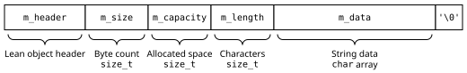

ProofScript — 20.8. Strings
Reference home · Grammar: ps-0.9-r2 · Semantic pin: Lean 4.34.0 stable.
Nat, Int, machine integers, floats, characters, strings, bytes, options, products, sums, lists, arrays, maps, ranges, subtypes and lazy computations retain their distinct native contracts. A target representation is not their meaning. Nat subtraction saturates at zero; the selected Int quotient differs from JavaScript BigInt truncation for some negative inputs. String offsets and Unicode conversions require explicit mappings.
Compiler and coverage boundary. The full API entries below retain exact names and signature metadata. Distinguish a signature display from executable source. Unknown reachable primitives reject the requested executable profile.
Inherited detail and attribution. The section below is adapted from the Apache-2.0 Lean reference mirrored at Basic-Types/Strings/index.html. Source Git blob: d6c44113aaece9869709b7a850dc3e3d02a42115. Its prose, API signatures and native names are retained where they describe the inherited semantics. Selected definition-keyword presentation aliases are recorded separately, not certified by a PSC parser. Native toolchains, intentional errors and historical releases keep their actual identities. The mirror contains rc2 material; the stable pin and stable-delta audit override conflicting claims.
20.8. Strings
Strings represent Unicode text. Strings are specially supported by Lean:
- They have a logical model that specifies their behavior in terms of
ByteArrays that contain UTF-8 scalar values. - In compiled code, they have a run-time representation that additionally includes a cached length, measured as the number of scalar values. The Lean runtime provides optimized implementations of string operations.
- There is string literal syntax for writing strings.
UTF-8 is a variable-width encoding. A character may be encoded as a one, two, three, or four byte code unit. The fact that strings are UTF-8-encoded byte arrays is visible in the API:
- There is no operation to project a particular character out of the string, as this would be a performance trap. Use an iterator in a loop instead of a
Nat. - Strings are indexed by
String.Pos, which internally records byte counts rather than character counts, and thus takes constant time.String.Posincludes a proof that the byte count in fact points at the beginning of a UTF-8 code unit. Aside from0, these should not be constructed directly, but rather updated usingString.nextandString.prev.
20.8.1. Logical Model
structure
String : Type
A string is a sequence of Unicode scalar values.
At runtime, strings are represented by dynamic arrays of bytes using the UTF-8 encoding. Both the size in bytes (String.utf8ByteSize) and in characters (String.length) are cached and take constant time. Many operations on strings perform in-place modifications when the reference to the string is unique.
Constructor
String.ofByteArray
Fields
toByteArray : ByteArray
The bytes of the UTF-8 encoding of the string. Since strings have a special representation in the runtime, this function actually takes linear time and space at runtime. For efficient access to the string's bytes, use String.utf8ByteSize and String.getUTF8Byte.
isValidUTF8 : self.toByteArray.IsValidUTF8
The bytes of the string form valid UTF-8.
The logical model of strings in Lean is a structure that contains two fields:
String.toByteArrayis aByteArray, which contains the UTF-8 encoding of the string.String.isValidUTF8is a proof that the bytes are in fact a valid UTF-8 encoding of a string.
This model allows operations on byte arrays to be used to specify and prove properties about string operations at a low level while still building on the theory of byte arrays. At the same time, it is close enough to the real run-time representation to avoid impedance mismatches between the logical model and the operations that make sense in the run-time representation.
20.8.1.1. Backwards Compatibility
In prior versions of Lean, the logical model of strings was a structure that contained a list of characters. This model is still useful. It is still accessible using String.ofList, which converts a list of characters into a String, and String.toList, which converts a String into a list of characters.
def
String.ofList (data : List Char) : String
Creates a string that contains the characters in a list, in order.
Examples:
String.ofList ['L', '∃', '∀', 'N'] = "L∃∀N"String.ofList [] = ""String.ofList ['a', 'a', 'a'] = "aaa"
def
String.toList (s : String) : List Char
Converts a string to a list of characters.
Since strings are represented as dynamic arrays of bytes containing the string encoded using UTF-8, this operation takes time and space linear in the length of the string.
Examples:
"abc".toList = ['a', 'b', 'c']"".toList = []"\n".toList = ['\n']
20.8.2. Run-Time Representation
Strings are represented as dynamic arrays of bytes, encoded in UTF-8. After the object header, a string contains:
byte count
The number of bytes that currently contain valid string data
capacity
The number of bytes presently allocated for the string
length
The length of the encoded string, which may be shorter than the byte count due to UTF-8 multi-byte characters
data
The actual character data in the string, null-terminated
Many string functions in the Lean runtime check whether they have exclusive access to their argument by consulting the reference count in the object header. If they do, and the string's capacity is sufficient, then the existing string can be mutated rather than allocating fresh memory. Otherwise, a new string must be allocated.
20.8.2.1. Performance Notes
Despite the fact that they appear to be an ordinary constructor and projection, String.ofByteArray and String.toByteArray take time linear in the length of the string. This is because byte arrays and strings do not have an identical representation, so the contents of the byte array must be copied to a new object.
20.8.3. Syntax
Lean has three kinds of string literals: ordinary string literals, interpolated string literals, and raw string literals.
20.8.3.1. String Literals
String literals begin and end with a double-quote character ".
Between these characters, they may contain any other character, including newlines, which are included literally (with the caveat that all newlines in a Lean source file are interpreted as '\n', regardless of file encoding and platform). Special characters that cannot otherwise be written in string literals may be escaped with a backslash, so "\"Quotes\"" is a string literal that begins and ends with double quotes. The following forms of escape sequences are accepted:
\r, \n, \t, \\, \", \'
These escape sequences have the usual meaning, mapping to CR, LF, tab, backslash, double quote, and single quote, respectively.
\xNN
When NN is a sequence of two hexadecimal digits, this escape denotes the character whose Unicode code point is indicated by the two-digit hexadecimal code.
\uNNNN
When NN is a sequence of two hexadecimal digits, this escape denotes the character whose Unicode code point is indicated by the four-digit hexadecimal code.
String literals may contain gaps. A gap is indicated by an escaped newline, with no intervening characters between the escaping backslash and the newline. In this case, the string denoted by the literal is missing the newline and all leading whitespace from the next line. String gaps may not precede lines that contain only whitespace.
Here, str1 and str2 are the same string:
const str1 := "String with \
a gap"
const str2 := "String with a gap"
example : str1 = str2 := rfl
If the line following the gap is empty, the string is rejected:
def str3 := "String with \
a gap"
The parser error is:
<example>:2:0-3:0: unexpected additional newline in string gap
20.8.3.2. Interpolated Strings
Preceding a string literal with s! causes it to be processed as an
interpolated string, in which regions of the string surrounded by { and } characters are parsed and interpreted as Lean expressions. Interpolated strings are interpreted by appending the string that precedes the interpolation, the expression (with an added call to toString surrounding it), and the string that follows the interpolation.
For example:
example :
s!"1 + 1 = {1 + 1}\n" =
"1 + 1 = " ++ toString (1 + 1) ++ "\n" :=
rfl
Preceding a literal with m! causes the interpolation to result in an instance of MessageData, the compiler's internal data structure for messages to be shown to users.
20.8.3.3. Raw String Literals
In
raw string literals,
there are no escape sequences or gaps, and each character denotes itself exactly. Raw string literals are preceded by r, followed by zero or more hash characters (#) and a double quote ". The string literal is completed at a double quote that is followed by the same number of hash characters. For example, they can be used to avoid the need to double-escape certain characters:
example : r"\t" = "\\t" := rfl
#eval r"Write backslash in a string using '\\\\'"
The #eval yields:
"Write backslash in a string using '\\\\\\\\'"
Including hash marks allows the strings to contain unescaped quotes:
example :
r#"This is "literally" quoted"# =
"This is \"literally\" quoted" :=
rfl
Adding sufficiently many hash marks allows any raw literal to be written literally:
example :
r##"This is r#"literally"# quoted"## =
"This is r#\"literally\"# quoted" :=
rfl
20.8.4. API Reference
20.8.4.1. Constructing
def
String.singleton (c : Char) : String
Returns a new string that contains only the character c.
Because strings are encoded in UTF-8, the resulting string may take multiple bytes.
Examples:
String.singleton 'L' = "L"String.singleton ' ' = " "String.singleton '"' = "\""String.singleton '𝒫' = "𝒫"
def
String.append (s : String) (t : String) : String
Appends two strings. Usually accessed via the ++ operator.
The internal implementation will perform destructive updates if the string is not shared.
Examples:
"abc".append "def" = "abcdef""abc" ++ "def" = "abcdef""" ++ "" = ""
def
String.join (l : List String) : String
Appends all the strings in a list of strings, in order.
Use String.intercalate to place a separator string between the strings in a list.
Examples:
String.join ["gr", "ee", "n"] = "green"String.join ["b", "", "l", "", "ue"] = "blue"String.join [] = ""
def
String.intercalate (s : String) : List String → String
Appends the strings in a list of strings, placing the separator s between each pair.
Examples:
", ".intercalate ["red", "green", "blue"] = "red, green, blue"" and ".intercalate ["tea", "coffee"] = "tea and coffee"" | ".intercalate ["M", "", "N"] = "M | | N"
20.8.4.2. Conversions
def
String.toList (s : String) : List Char
Converts a string to a list of characters.
Since strings are represented as dynamic arrays of bytes containing the string encoded using UTF-8, this operation takes time and space linear in the length of the string.
Examples:
"abc".toList = ['a', 'b', 'c']"".toList = []"\n".toList = ['\n']
def
String.isNat (s : String) : Bool
Checks whether the string can be interpreted as the decimal representation of a natural number.
A slice can be interpreted as a decimal natural number if it is not empty and all the characters in it are digits.
Use toNat? or toNat! to convert such a slice to a natural number.
Examples:
"".isNat = false"0".isNat = true"5".isNat = true"05".isNat = true"587".isNat = true"-587".isNat = false" 5".isNat = false"2+3".isNat = false"0xff".isNat = false
def
String.toNat? (s : String) : Option Nat
Interprets a string as the decimal representation of a natural number, returning it. Returns none if the slice does not contain a decimal natural number.
A slice can be interpreted as a decimal natural number if it is not empty and all the characters in it are digits.
Use isNat to check whether toNat? would return some. toNat! is an alternative that panics instead of returning none when the slice is not a natural number.
Examples:
"".toNat? = none"0".toNat? = some 0"5".toNat? = some 5"587".toNat? = some 587"-587".toNat? = none" 5".toNat? = none"2+3".toNat? = none"0xff".toNat? = none
def
String.toNat! (s : String) : Nat
Interprets a string as the decimal representation of a natural number, returning it. Panics if the slice does not contain a decimal natural number.
A slice can be interpreted as a decimal natural number if it is not empty and all the characters in it are digits.
Use isNat to check whether toNat! would return a value. toNat? is a safer alternative that returns none instead of panicking when the string is not a natural number.
Examples:
"0".toNat! = 0"5".toNat! = 5"587".toNat! = 587
def
String.isInt (s : String) : Bool
Checks whether the string can be interpreted as the decimal representation of an integer.
A string can be interpreted as a decimal integer if it only consists of at least one decimal digit and optionally - in front. Leading + characters are not allowed.
Use String.toInt? or String.toInt! to convert such a string to an integer.
Examples:
"".isInt = false"-".isInt = false"0".isInt = true"-0".isInt = true"5".isInt = true"587".isInt = true"-587".isInt = true"+587".isInt = false" 5".isInt = false"2-3".isInt = false"0xff".isInt = false
def
String.toInt? (s : String) : Option Int
Interprets a string as the decimal representation of an integer, returning it. Returns none if the string does not contain a decimal integer.
A string can be interpreted as a decimal integer if it only consists of at least one decimal digit and optionally - in front. Leading + characters are not allowed.
Use String.isInt to check whether String.toInt? would return some. String.toInt! is an alternative that panics instead of returning none when the string is not an integer.
Examples:
"".toInt? = none"-".toInt? = none"0".toInt? = some 0"5".toInt? = some 5"-5".toInt? = some (-5)"587".toInt? = some 587"-587".toInt? = some (-587)" 5".toInt? = none"2-3".toInt? = none"0xff".toInt? = none
def
String.toInt! (s : String) : Int
Interprets a string as the decimal representation of an integer, returning it. Panics if the string does not contain a decimal integer.
A string can be interpreted as a decimal integer if it only consists of at least one decimal digit and optionally - in front. Leading + characters are not allowed.
Use String.isInt to check whether String.toInt! would return a value. String.toInt? is a safer alternative that returns none instead of panicking when the string is not an integer.
Examples:
"0".toInt! = 0"5".toInt! = 5"587".toInt! = 587"-587".toInt! = -587
def
String.toFormat (s : String) : Std.Format
Converts a string to a pretty-printer document, replacing newlines in the string with Std.Format.line.
20.8.4.3. Properties
def
String.isEmpty (s : String) : Bool
Checks whether a string is empty.
Empty strings are equal to "" and have length and end position 0.
Examples:
"".isEmpty = true"empty".isEmpty = false" ".isEmpty = false
def
String.length (b : String) : Nat
Returns the length of a string in Unicode code points.
Examples:
"".length = 0"abc".length = 3"L∃∀N".length = 4
20.8.4.4. Positions
structure
String.Pos (s : String) : Type
A Pos s is a byte offset in s together with a proof that this position is at a UTF-8 character boundary.
Constructor
String.Pos.mk
Fields
offset : String.Pos.Raw
The underlying byte offset of the Pos.
isValid : String.Pos.Raw.IsValid s self.offset
The proof that offset is valid for the string s.
20.8.4.4.1. In Strings
def
String.startPos (s : String) : s.Pos
The start position of s, as an s.Pos.
def
String.endPos (s : String) : s.Pos
The past-the-end position of s, as an s.Pos.
def
String.pos (s : String) (off : String.Pos.Raw)
(h : String.Pos.Raw.IsValid s off) : s.Pos
Constructs a valid position on s from a position and a proof that it is valid.
def
String.pos? (s : String) (off : String.Pos.Raw) : Option s.Pos
Constructs a valid position on s from a position, returning none if the position is not valid.
def
String.pos! (s : String) (off : String.Pos.Raw) : s.Pos
Constructs a valid position s from a position, panicking if the position is not valid.
def
String.extract {s : String} (b e : s.Pos) : String
Copies a region of a string to a new string.
The region of s from b (inclusive) to e (exclusive) is copied to a newly-allocated String.
If b's offset is greater than or equal to that of e, then the resulting string is "".
If possible, prefer String.slice, which avoids the allocation.
20.8.4.4.2. Lookups
def
String.Pos.get {s : String} (pos : s.Pos) (h : pos ≠ s.endPos) : Char
Returns the character at the position pos of a string, taking a proof that p is not the past-the-end position.
This function is overridden with an efficient implementation in runtime code.
Examples:
("abc".pos ⟨1⟩ (by decide)).get (by decide) = 'b'("L∃∀N".pos ⟨1⟩ (by decide)).get (by decide) = '∃'
def
String.Pos.get! {s : String} (pos : s.Pos) : Char
Returns the character at the position pos of a string, or panics if the position is the past-the-end position.
This function is overridden with an efficient implementation in runtime code.
def
String.Pos.get? {s : String} (pos : s.Pos) : Option Char
Returns the character at the position pos of a string, or none if the position is the past-the-end position.
This function is overridden with an efficient implementation in runtime code.
def
String.Pos.set {s : String} (p : s.Pos) (c : Char) (hp : p ≠ s.endPos) :
String
Replaces the character at a specified position in a string with a new character.
If both the replacement character and the replaced character are 7-bit ASCII characters and the string is not shared, then it is updated in-place and not copied.
Examples:
("abc".pos ⟨1⟩ (by decide)).set 'B' (by decide) = "aBc"("L∃∀N".pos ⟨4⟩ (by decide)).set 'X' (by decide) = "L∃XN"
20.8.4.4.3. Modifications
def
String.Pos.modify {s : String} (p : s.Pos) (f : Char → Char)
(hp : p ≠ s.endPos) : String
Replaces the character at position p in the string s with the result of applying f to that character.
If both the replacement character and the replaced character are 7-bit ASCII characters and the string is not shared, then it is updated in-place and not copied.
Examples:
("abc".pos ⟨1⟩ (by decide)).modify Char.toUpper (by decide) = "aBc"
def
String.Pos.byte {s : String} (pos : s.Pos) (h : pos ≠ s.endPos) : UInt8
Returns the byte at the position pos of a string.
20.8.4.4.4. Adjustment
def
String.Pos.prev {s : String} (pos : s.Pos) (h : pos ≠ s.startPos) :
s.Pos
Returns the previous valid position before the given position, given a proof that the position is not the start position, which guarantees that such a position exists.
def
String.Pos.prev! {s : String} (pos : s.Pos) : s.Pos
Returns the previous valid position before the given position, or panics if the position is the start position.
def
String.Pos.prev? {s : String} (pos : s.Pos) : Option s.Pos
Returns the previous valid position before the given position, or none if the position is the start position.
def
String.Pos.next {s : String} (pos : s.Pos) (h : pos ≠ s.endPos) : s.Pos
Advances a valid position on a string to the next valid position, given a proof that the position is not the past-the-end position, which guarantees that such a position exists.
def
String.Pos.next! {s : String} (pos : s.Pos) : s.Pos
Advances a valid position on a string to the next valid position, or panics if the given position is the past-the-end position.
def
String.Pos.next? {s : String} (pos : s.Pos) : Option s.Pos
Advances a valid position on a string to the next valid position, or returns none if the given position is the past-the-end position.
20.8.4.4.5. Other Strings
def
String.Pos.cast {s t : String} (pos : s.Pos) (h : s = t) : t.Pos
Constructs a valid position on t from a valid position on s and a proof that s = t.
def
String.Pos.ofCopy {s : String.Slice} (pos : s.copy.Pos) : s.Pos
Given a slice s and a position on s.copy, obtain the corresponding position on s.
def
String.Pos.toSetOfLE {s : String} (q p : s.Pos) (c : Char)
(hp : p ≠ s.endPos) (hpq : q ≤ p) : (p.set c hp).Pos
Given a valid position in a string, obtain the corresponding position after setting a character on that string, provided that the position was before the changed position.
def
String.Pos.toModifyOfLE {s : String} (q p : s.Pos) (f : Char → Char)
(hp : p ≠ s.endPos) (hpq : q ≤ p) : (p.modify f hp).Pos
Given a valid position in a string, obtain the corresponding position after modifying a character in that string, provided that the position was before the changed position.
def
String.Pos.toSlice {s : String} (pos : s.Pos) : s.toSlice.Pos
Turns a valid position on the string s into a valid position on the slice s.toSlice.
20.8.4.5. Raw Positions
structure
String.Pos.Raw : Type
A byte position in a String, according to its UTF-8 encoding.
Character positions (counting the Unicode code points rather than bytes) are represented by plain Nats. Indexing a String by a String.Pos.Raw takes constant time, while character positions need to be translated internally to byte positions, which takes linear time.
A byte position p is valid for a string s if 0 ≤ p ≤ s.rawEndPos and p lies on a UTF-8 character boundary, see String.Pos.IsValid.
There is another type, String.Pos, which bundles the validity predicate. Using String.Pos instead of String.Pos.Raw is recommended because it will lead to less error handling and fewer edge cases.
Constructor
String.Pos.Raw.mk
Fields
byteIdx : Nat
Get the underlying byte index of a String.Pos.Raw
20.8.4.5.1. Byte Position
def
String.Pos.Raw.offsetOfPos (s : String) (pos : String.Pos.Raw) : Nat
Returns the character index that corresponds to the provided position (i.e. UTF-8 byte index) in a string.
If the position is at the end of the string, then the string's length in characters is returned. If the position is invalid due to pointing at the middle of a UTF-8 byte sequence, then the character index of the next character after the position is returned.
Examples:
"L∃∀N".offsetOfPos ⟨0⟩ = 0"L∃∀N".offsetOfPos ⟨1⟩ = 1"L∃∀N".offsetOfPos ⟨2⟩ = 2"L∃∀N".offsetOfPos ⟨4⟩ = 2"L∃∀N".offsetOfPos ⟨5⟩ = 3"L∃∀N".offsetOfPos ⟨50⟩ = 4
20.8.4.5.2. Validity
def
String.Pos.Raw.isValid (s : String) (p : String.Pos.Raw) : Bool
Returns true if p is a valid UTF-8 position in the string s.
This means that p ≤ s.rawEndPos and p lies on a UTF-8 character boundary. At runtime, this operation takes constant time.
Examples:
String.Pos.isValid "abc" ⟨0⟩ = trueString.Pos.isValid "abc" ⟨1⟩ = trueString.Pos.isValid "abc" ⟨3⟩ = trueString.Pos.isValid "abc" ⟨4⟩ = falseString.Pos.isValid "𝒫(A)" ⟨0⟩ = trueString.Pos.isValid "𝒫(A)" ⟨1⟩ = falseString.Pos.isValid "𝒫(A)" ⟨2⟩ = falseString.Pos.isValid "𝒫(A)" ⟨3⟩ = falseString.Pos.isValid "𝒫(A)" ⟨4⟩ = true
def
String.Pos.Raw.isValidForSlice (s : String.Slice) (p : String.Pos.Raw) :
Bool
Efficiently checks whether a position is at a UTF-8 character boundary of the slice s.
20.8.4.5.3. Boundaries
def
String.rawEndPos (s : String) : String.Pos.Raw
A UTF-8 byte position that points at the end of a string, just after the last character.
"abc".rawEndPos = ⟨3⟩"L∃∀N".rawEndPos = ⟨8⟩
def
String.Pos.Raw.atEnd : String → String.Pos.Raw → Bool
Returns true if a specified byte position is greater than or equal to the position which points to the end of a string. Otherwise, returns false.
Examples:
(0 |> "abc".next |> "abc".next |> "abc".atEnd) = false(0 |> "abc".next |> "abc".next |> "abc".next |> "abc".next |> "abc".atEnd) = true(0 |> "L∃∀N".next |> "L∃∀N".next |> "L∃∀N".next |> "L∃∀N".atEnd) = false(0 |> "L∃∀N".next |> "L∃∀N".next |> "L∃∀N".next |> "L∃∀N".next |> "L∃∀N".atEnd) = true"abc".atEnd ⟨4⟩ = true"L∃∀N".atEnd ⟨7⟩ = false"L∃∀N".atEnd ⟨8⟩ = true
20.8.4.5.4. Comparisons
def
String.Pos.Raw.min (p₁ p₂ : String.Pos.Raw) : String.Pos.Raw
Returns either p₁ or p₂, whichever has the least byte index.
def
String.Pos.Raw.byteDistance (lo hi : String.Pos.Raw) : Nat
Returns the size of the byte slice delineated by the positions lo and hi.
def
String.Pos.Raw.substrEq (s1 : String) (pos1 : String.Pos.Raw)
(s2 : String) (pos2 : String.Pos.Raw) (sz : Nat) : Bool
Checks whether substrings of two strings are equal. Substrings are indicated by their starting positions and a size in UTF-8 bytes. Returns false if the indicated substring does not exist in either string.
This is a legacy function. The recommended alternative is to construct slices representing the strings to be compared and use the BEq instance of String.Slice.
20.8.4.5.5. Adjustment
def
String.Pos.Raw.prev : String → String.Pos.Raw → String.Pos.Raw
Returns the position in a string before a specified position, p. If p = ⟨0⟩, returns 0. If p is greater than rawEndPos, returns the position one byte before p. Otherwise, if p occurs in the middle of a multi-byte character, returns the beginning position of that character.
For example, "L∃∀N".prev ⟨3⟩ is ⟨1⟩, since byte 3 occurs in the middle of the multi-byte character '∃' that starts at byte 1.
This is a legacy function. The recommended alternative is String.Pos.prev or one of its variants like String.Pos.prev?, combined with String.pos or another means of obtaining a String.Pos.
Examples:
"abc".get ("abc".rawEndPos |> "abc".prev) = 'c'"L∃∀N".get ("L∃∀N".rawEndPos |> "L∃∀N".prev |> "L∃∀N".prev |> "L∃∀N".prev) = '∃'
def
String.Pos.Raw.next (s : String) (p : String.Pos.Raw) : String.Pos.Raw
Returns the next position in a string after position p. If p is not a valid position or p = s.endPos, returns the position one byte after p.
A run-time bounds check is performed to determine whether p is at the end of the string. If a bounds check has already been performed, use String.next' to avoid a repeated check.
This is a legacy function. The recommended alternative is String.Pos.next or one of its variants like String.Pos.next?, combined with String.pos or another means of obtaining a String.ValisPos.
Some examples of edge cases:
"abc".next ⟨3⟩ = ⟨4⟩, since3 = "abc".endPos"L∃∀N".next ⟨2⟩ = ⟨3⟩, since2points into the middle of a multi-byte UTF-8 character
Examples:
"abc".get ("abc".next 0) = 'b'"L∃∀N".get (0 |> "L∃∀N".next |> "L∃∀N".next) = '∀'
def
String.Pos.Raw.next' (s : String) (p : String.Pos.Raw)
(h : ¬String.Pos.Raw.atEnd s p = true) : String.Pos.Raw
Returns the next position in a string after position p. The result is unspecified if p is not a valid position.
Requires evidence, h, that p is within bounds. No run-time bounds check is performed, as in String.next.
A typical pattern combines String.next' with a dependent if-expression to avoid the overhead of an additional bounds check. For example:
def next? (s : String) (p : String.Pos) : Option Char :=
if h : s.atEnd p then none else s.get (s.next' p h)
This is a legacy function. The recommended alternative is String.Pos.next, combined with String.pos or another means of obtaining a String.Pos.
Example:
let abc := "abc"; abc.get (abc.next' 0 (by decide)) = 'b'
def
String.Pos.Raw.nextUntil (s : String) (p : Char → Bool)
(i : String.Pos.Raw) : String.Pos.Raw
Repeatedly increments a position in a string, as if by String.Pos.Raw.next, while the predicate p returns false for the character at the position. Stops incrementing at the end of the string or when p returns true for the current character.
Examples:
let s := " a "; (Pos.Raw.nextUntil s Char.isWhitespace 0).get s = ' 'let s := " a "; (Pos.Raw.nextUntil s Char.isAlpha 0).get s = 'a'let s := "a "; (Pos.Raw.nextUntil s Char.isWhitespace 0).get s = ' '
def
String.Pos.Raw.nextWhile (s : String) (p : Char → Bool)
(i : String.Pos.Raw) : String.Pos.Raw
Repeatedly increments a position in a string, as if by String.Pos.Raw.next, while the predicate p returns true for the character at the position. Stops incrementing at the end of the string or when p returns false for the current character.
Examples:
let s := " a "; ((0 : Pos.Raw).nextWhile s Char.isWhitespace).get s = 'a'let s := "a "; ((0 : Pos.Raw).nextWhile s Char.isWhitespace).get s = 'a'let s := "ba "; (Pos.Raw.nextWhile s Char.isWhitespace 0).get s = 'b'
def
String.Pos.Raw.inc (p : String.Pos.Raw) : String.Pos.Raw
Increases the byte offset of the position by 1. Not to be confused with Pos.next.
def
String.Pos.Raw.increaseBy (p : String.Pos.Raw) (n : Nat) :
String.Pos.Raw
Advances p by n bytes. This is not an HAdd instance because it should be a relatively rare operation, so we use a name to make accidental use less likely. To add the size of a character c or string s to a raw position p, you can use p + c resp. p + s.
This should be seen as an "advance" or "skip".
See also Pos.Raw.offsetBy, which turns relative positions into absolute positions.
def
String.Pos.Raw.offsetBy (p offset : String.Pos.Raw) : String.Pos.Raw
Offsets p by offset on the left. This is not an HAdd instance because it should be a relatively rare operation, so we use a name to make accidental use less likely. To offset a position by the size of a character character c or string s, you can use c + p resp. s + p.
This should be seen as an operation that converts relative positions into absolute positions.
See also Pos.Raw.increaseBy, which is an "advancing" operation.
def
String.Pos.Raw.dec (p : String.Pos.Raw) : String.Pos.Raw
Decreases the byte offset of the position by 1. Not to be confused with Pos.prev.
def
String.Pos.Raw.decreaseBy (p : String.Pos.Raw) (n : Nat) :
String.Pos.Raw
Move the position p back by n bytes. This is not an HSub instance because it should be a relatively rare operation, so we use a name to make accidental use less likely. To remove the size of a character c or string s from a raw position p, you can use p - c resp. p - s.
This should be seen as the inverse of an "advance" or "skip".
See also Pos.Raw.unoffsetBy, which turns absolute positions into relative positions.
def
String.Pos.Raw.unoffsetBy (p offset : String.Pos.Raw) : String.Pos.Raw
Decreases p by offset. This is not an HSub instance because it should be a relatively rare operation, so we use a name to make accidental use less likely. To unoffset a position by the size of a character c or string s, you can use p - c resp. p - s.
This should be seen as an operation that converts absolute positions into relative positions.
See also Pos.Raw.decreaseBy, which is an "unadvancing" operation.
20.8.4.5.6. String Lookups
def
String.Pos.Raw.extract :
String → String.Pos.Raw → String.Pos.Raw → String
Creates a new string that consists of the region of the input string delimited by the two positions.
The result is "" if the start position is greater than or equal to the end position or if the start position is at the end of the string. If either position is invalid (that is, if either points at the middle of a multi-byte UTF-8 character) then the result is unspecified.
This is a legacy function. The recommended alternative is String.extract, but usually it is even better to operate on String.Slice instead and call String.Slice.copy (only) if required.
Examples:
String.Pos.Raw.extract "red green blue" ⟨0⟩ ⟨3⟩ = "red"String.Pos.Raw.extract "red green blue" ⟨3⟩ ⟨0⟩ = ""String.Pos.Raw.extract "red green blue" ⟨0⟩ ⟨100⟩ = "red green blue"String.Pos.Raw.extract "red green blue" ⟨4⟩ ⟨100⟩ = "green blue"String.Pos.Raw.extract "L∃∀N" ⟨1⟩ ⟨2⟩ = "∃∀N"String.Pos.Raw.extract "L∃∀N" ⟨2⟩ ⟨100⟩ = ""
def
String.Pos.Raw.get (s : String) (p : String.Pos.Raw) : Char
Returns the character at position p of a string. If p is not a valid position, returns the fallback value (default : Char), which is 'A', but does not panic.
This function is overridden with an efficient implementation in runtime code. See String.Pos.Raw.utf8GetAux for the reference implementation.
This is a legacy function. The recommended alternative is String.Pos.get, combined with String.pos or another means of obtaining a String.Pos.
Examples:
"abc".get ⟨1⟩ = 'b'"abc".get ⟨3⟩ = (default : Char)because byte3is at the end of the string."L∃∀N".get ⟨2⟩ = (default : Char)because byte2is in the middle of'∃'.
def
String.Pos.Raw.get! (s : String) (p : String.Pos.Raw) : Char
Returns the character at position p of a string. Panics if p is not a valid position.
See String.pos? and String.Pos.get for a safer alternative.
This function is overridden with an efficient implementation in runtime code. See String.utf8GetAux for the reference implementation.
This is a legacy function. The recommended alternative is String.Pos.get, combined with String.pos! or another means of obtaining a String.Pos.
Examples
"abc".get! ⟨1⟩ = 'b'
def
String.Pos.Raw.get' (s : String) (p : String.Pos.Raw)
(h : ¬String.Pos.Raw.atEnd s p = true) : Char
Returns the character at position p of a string. Returns (default : Char), which is 'A', if p is not a valid position.
Requires evidence, h, that p is within bounds instead of performing a run-time bounds check as in String.get.
A typical pattern combines get' with a dependent if-expression to avoid the overhead of an additional bounds check. For example:
def getInBounds? (s : String) (p : String.Pos) : Option Char :=
if h : s.atEnd p then none else some (s.get' p h)
Even with evidence of ¬ s.atEnd p, p may be invalid if a byte index points into the middle of a multi-byte UTF-8 character. For example, "L∃∀N".get' ⟨2⟩ (by decide) = (default : Char).
This is a legacy function. The recommended alternative is String.Pos.get, combined with String.pos or another means of obtaining a String.Pos.
Examples:
"abc".get' 0 (by decide) = 'a'let lean := "L∃∀N"; lean.get' (0 |> lean.next |> lean.next) (by decide) = '∀'
def
String.Pos.Raw.get? : String → String.Pos.Raw → Option Char
Returns the character at position p of a string. If p is not a valid position, returns none.
This function is overridden with an efficient implementation in runtime code. See String.utf8GetAux? for the reference implementation.
This is a legacy function. The recommended alternative is String.Pos.get, combined with String.pos? or another means of obtaining a String.Pos.
Examples:
"abc".get? ⟨1⟩ = some 'b'"abc".get? ⟨3⟩ = none"L∃∀N".get? ⟨1⟩ = some '∃'"L∃∀N".get? ⟨2⟩ = none
20.8.4.5.7. String Modifications
def
String.Pos.Raw.set : String → String.Pos.Raw → Char → String
Replaces the character at a specified position in a string with a new character. If the position is invalid, the string is returned unchanged.
If both the replacement character and the replaced character are 7-bit ASCII characters and the string is not shared, then it is updated in-place and not copied.
This is a legacy function. The recommended alternative is String.Pos.set, combined with String.pos or another means of obtaining a String.Pos.
Examples:
"abc".set ⟨1⟩ 'B' = "aBc""abc".set ⟨3⟩ 'D' = "abc""L∃∀N".set ⟨4⟩ 'X' = "L∃XN""L∃∀N".set ⟨2⟩ 'X' = "L∃∀N"because'∃'is a multi-byte character, so the byte index2is an invalid position.
def
String.Pos.Raw.modify (s : String) (i : String.Pos.Raw)
(f : Char → Char) : String
Replaces the character at position p in the string s with the result of applying f to that character. If p is an invalid position, the string is returned unchanged.
If both the replacement character and the replaced character are 7-bit ASCII characters and the string is not shared, then it is updated in-place and not copied.
This is a legacy function. The recommended alternative is String.Pos.set, combined with String.pos or another means of obtaining a String.Pos.
Examples:
"abc".modify ⟨1⟩ Char.toUpper = "aBc""abc".modify ⟨3⟩ Char.toUpper = "abc"
20.8.4.6. Lookups and Modifications
Operations that select a sub-region of a string (for example, a prefix or suffix of it) return a slice into the original string rather than allocating a new string. Use String.Slice.copy to convert the slice into a new string.
def
String.take (s : String) (n : Nat) : String.Slice
Returns a String.Slice that contains the first n characters (Unicode code points) of s.
If n is greater than s.toList.length, returns s.toSlice.
This is a cheap operation because it does not allocate a new string to hold the result. To convert the result into a string, use String.Slice.copy.
Examples:
"red green blue".take 3 == "red".toSlice"red green blue".take 1 == "r".toSlice"red green blue".take 0 == "".toSlice"red green blue".take 100 == "red green blue".toSlice"مرحبا بالعالم".take 5 == "مرحبا".toSlice
def
String.takeWhile {ρ : Type} (s : String) (pat : ρ)
[String.Slice.Pattern.ForwardPattern pat] : String.Slice
Creates a string slice that contains the longest prefix of s in which pat matched (potentially repeatedly).
This is a cheap operation because it does not allocate a new string to hold the result. To convert the result into a string, use String.Slice.copy.
This function is generic over all currently supported patterns.
Examples:
"red green blue".takeWhile Char.isLower == "red".toSlice"red green blue".takeWhile 'r' == "r".toSlice"red red green blue".takeWhile "red " == "red red ".toSlice"red green blue".takeWhile (fun (_ : Char) => true) == "red green blue".toSlice
def
String.takeEnd (s : String) (n : Nat) : String.Slice
Returns a String.Slice that contains the last n characters (Unicode code points) of s.
If n is greater than s.toList.length, returns s.toSlice.
This is a cheap operation because it does not allocate a new string to hold the result. To convert the result into a string, use String.Slice.copy.
Examples:
"red green blue".takeEnd 4 == "blue".toSlice"red green blue".takeEnd 1 == "e".toSlice"red green blue".takeEnd 0 == "".toSlice"red green blue".takeEnd 100 == "red green blue".toSlice"مرحبا بالعالم".takeEnd 5 == "لعالم".toSlice
def
String.takeEndWhile {ρ : Type} (s : String) (pat : ρ)
[String.Slice.Pattern.BackwardPattern pat] : String.Slice
Creates a string slice that contains the longest suffix of s in which pat matched (potentially repeatedly).
This is a cheap operation because it does not allocate a new string to hold the result. To convert the result into a string, use String.Slice.copy.
This function is generic over all currently supported patterns.
Examples:
"red green blue".takeEndWhile Char.isLower == "blue".toSlice"red green blue".takeEndWhile 'e' == "e".toSlice"red green blue".takeEndWhile (fun (_ : Char) => true) == "red green blue".toSlice
def
String.drop (s : String) (n : Nat) : String.Slice
Returns a String.Slice obtained by removing the specified number of characters (Unicode code points) from the start of the string.
If n is greater than s.toList.length, returns an empty slice.
This is a cheap operation because it does not allocate a new string to hold the result. To convert the result into a string, use String.Slice.copy.
Examples:
"red green blue".drop 4 == "green blue".toSlice"red green blue".drop 10 == "blue".toSlice"red green blue".drop 50 == "".toSlice"مرحبا بالعالم".drop 3 == "با بالعالم".toSlice
def
String.dropWhile {ρ : Type} (s : String) (pat : ρ)
[String.Slice.Pattern.ForwardPattern pat] : String.Slice
Creates a string slice by removing the longest prefix from s in which pat matched (potentially repeatedly).
This is a cheap operation because it does not allocate a new string to hold the result. To convert the result into a string, use String.Slice.copy.
This function is generic over all currently supported patterns.
Examples:
"red green blue".dropWhile Char.isLower == " green blue".toSlice"red green blue".dropWhile 'r' == "ed green blue".toSlice"red red green blue".dropWhile "red " == "green blue".toSlice"red green blue".dropWhile (fun (_ : Char) => true) == "".toSlice
def
String.dropEnd (s : String) (n : Nat) : String.Slice
Returns a String.Slice obtained by removing the specified number of characters (Unicode code points) from the end of the string.
If n is greater than s.toList.length, returns an empty slice.
This is a cheap operation because it does not allocate a new string to hold the result. To convert the result into a string, use String.Slice.copy.
Examples:
"red green blue".dropEnd 5 == "red green".toSlice"red green blue".dropEnd 11 == "red".toSlice"red green blue".dropEnd 50 == "".toSlice"مرحبا بالعالم".dropEnd 3 == "مرحبا بالع".toSlice
def
String.dropEndWhile {ρ : Type} (s : String) (pat : ρ)
[String.Slice.Pattern.BackwardPattern pat] : String.Slice
Creates a new string by removing the longest suffix from s in which pat matches (potentially repeatedly).
This is a cheap operation because it does not allocate a new string to hold the result. To convert the result into a string, use String.Slice.copy.
This function is generic over all currently supported patterns.
Examples:
"red green blue".dropEndWhile Char.isLower == "red green ".toSlice"red green blue".dropEndWhile 'e' == "red green blu".toSlice"red green blue".dropEndWhile (fun (_ : Char) => true) == "".toSlice
def
String.dropPrefix? {ρ : Type} (s : String) (pat : ρ)
[String.Slice.Pattern.ForwardPattern pat] : Option String.Slice
If pat matches a prefix of s, returns the remainder. Returns none otherwise.
Use String.dropPrefix to return the slice unchanged when pat does not match a prefix.
This is a cheap operation because it does not allocate a new string to hold the result. To convert the result into a string, use String.Slice.copy.
This function is generic over all currently supported patterns.
Examples:
"red green blue".dropPrefix? "red " == some "green blue".toSlice"red green blue".dropPrefix? "reed " == none"red green blue".dropPrefix? 'r' == some "ed green blue".toSlice"red green blue".dropPrefix? Char.isLower == some "ed green blue".toSlice
def
String.dropPrefix {ρ : Type} (s : String) (pat : ρ)
[String.Slice.Pattern.ForwardPattern pat] : String.Slice
If pat matches a prefix of s, returns the remainder. Returns s unmodified otherwise.
Use String.dropPrefix? to return none when pat does not match a prefix.
This is a cheap operation because it does not allocate a new string to hold the result. To convert the result into a string, use String.Slice.copy.
This function is generic over all currently supported patterns.
Examples:
"red green blue".dropPrefix "red " == "green blue".toSlice"red green blue".dropPrefix "reed " == "red green blue".toSlice"red green blue".dropPrefix 'r' == "ed green blue".toSlice"red green blue".dropPrefix Char.isLower == "ed green blue".toSlice
def
String.dropSuffix? {ρ : Type} (s : String) (pat : ρ)
[String.Slice.Pattern.BackwardPattern pat] : Option String.Slice
If pat matches a suffix of s, returns the remainder. Returns none otherwise.
Use String.dropSuffix to return the slice unchanged when pat does not match a suffix.
This is a cheap operation because it does not allocate a new string to hold the result. To convert the result into a string, use String.Slice.copy.
This function is generic over all currently supported patterns.
Examples:
"red green blue".dropSuffix? " blue" == some "red green".toSlice"red green blue".dropSuffix? "bluu " == none"red green blue".dropSuffix? 'e' == some "red green blu".toSlice"red green blue".dropSuffix? Char.isLower == some "red green blu".toSlice
def
String.dropSuffix {ρ : Type} (s : String) (pat : ρ)
[String.Slice.Pattern.BackwardPattern pat] : String.Slice
If pat matches a suffix of s, returns the remainder. Returns s unmodified otherwise.
Use String.dropSuffix? to return none when pat does not match a prefix.
This is a cheap operation because it does not allocate a new string to hold the result. To convert the result into a string, use String.Slice.copy.
This function is generic over all currently supported patterns.
Examples:
"red green blue".dropSuffix " blue" == "red green".toSlice"red green blue".dropSuffix "bluu " == "red green blue".toSlice"red green blue".dropSuffix 'e' == "red green blu".toSlice"red green blue".dropSuffix Char.isLower == "red green blu".toSlice
def
String.trimAscii (s : String) : String.Slice
Removes leading and trailing whitespace from a string.
“Whitespace” is defined as characters for which Char.isWhitespace returns true.
Examples:
"abc".trimAscii == "abc".toSlice" abc".trimAscii == "abc".toSlice"abc \t ".trimAscii == "abc".toSlice" abc ".trimAscii == "abc".toSlice"abc\ndef\n".trimAscii == "abc\ndef".toSlice
def
String.trimAsciiStart (s : String) : String.Slice
Removes leading whitespace from a string by returning a slice whose start position is the first non-whitespace character, or the end position if there is no non-whitespace character.
“Whitespace” is defined as characters for which Char.isWhitespace returns true.
Examples:
"abc".trimAsciiStart == "abc".toSlice" abc".trimAsciiStart == "abc".toSlice"abc \t ".trimAsciiStart == "abc \t ".toSlice" abc ".trimAsciiStart == "abc ".toSlice"abc\ndef\n".trimAsciiStart == "abc\ndef\n".toSlice
def
String.trimAsciiEnd (s : String) : String.Slice
Removes trailing whitespace from a string by returning a slice whose end position is the last non-whitespace character, or the start position if there is no non-whitespace character.
“Whitespace” is defined as characters for which Char.isWhitespace returns true.
Examples:
"abc".trimAsciiEnd == "abc".toSlice" abc".trimAsciiEnd == " abc".toSlice"abc \t ".trimAsciiEnd == "abc".toSlice" abc ".trimAsciiEnd == " abc".toSlice"abc\ndef\n".trimAsciiEnd == "abc\ndef".toSlice
def
String.removeLeadingSpaces (s : String) : String
Consistently de-indents the lines in a string, removing the same amount of leading whitespace from each line such that the least-indented line has no leading whitespace.
The number of leading whitespace characters to remove from each line is determined by counting the number of leading space (' ') and tab ('\t') characters on lines after the first line that also contain non-whitespace characters. No distinction is made between tab and space characters; both count equally.
The least number of leading whitespace characters found is then removed from the beginning of each line. The first line's leading whitespace is not counted when determining how far to de-indent the string, but leading whitespace is removed from it.
Examples:
"Here:\n fun x =>\n x + 1".removeLeadingSpaces = "Here:\nfun x =>\n x + 1""Here:\n\t\tfun x =>\n\t \tx + 1".removeLeadingSpaces = "Here:\nfun x =>\n \tx + 1""Here:\n\t\tfun x =>\n \n\t \tx + 1".removeLeadingSpaces = "Here:\nfun x =>\n\n \tx + 1"
def
String.front (s : String) : Char
Returns the first character in s. If s = "", returns (default : Char).
Examples:
"abc".front = 'a'"".front = (default : Char)
def
String.back (s : String) : Char
Returns the last character in s. If s = "", returns (default : Char).
Examples:
"abc".back = 'c'"".back = (default : Char)
def
String.find {ρ : Type} {σ : String.Slice → Type}
[(s : String.Slice) →
Std.Iterator (σ s) Id (String.Slice.Pattern.SearchStep s)]
[(s : String.Slice) → Std.IteratorLoop (σ s) Id Id] (s : String)
(pattern : ρ) [String.Slice.Pattern.ToForwardSearcher pattern σ] :
s.Pos
Finds the position of the first match of the pattern pattern in a slice s. If there is no match s.endPos is returned.
This function is generic over all currently supported patterns.
Examples:
("coffee tea water".find Char.isWhitespace).get! == ' '"tea".find (fun (c : Char) => c == 'X') == "tea".endPos("coffee tea water".find "tea").get! == 't'
def
String.revFind? {ρ : Type} {σ : String.Slice → Type}
[(s : String.Slice) →
Std.Iterator (σ s) Id (String.Slice.Pattern.SearchStep s)]
[(s : String.Slice) → Std.IteratorLoop (σ s) Id Id] (s : String)
(pattern : ρ) [String.Slice.Pattern.ToBackwardSearcher pattern σ] :
Option s.Pos
Finds the position of the first match of the pattern pattern in a string, starting from the end of the slice and traversing towards the start. If there is no match none is returned.
This function is generic over all currently supported patterns except String/String.Slice.
Examples:
("coffee tea water".toSlice.revFind? Char.isWhitespace).map (·.get!) == some ' '"tea".toSlice.revFind? (fun (c : Char) => c == 'X') == none
def
String.contains {ρ : Type} {σ : String.Slice → Type}
[(s : String.Slice) →
Std.Iterator (σ s) Id (String.Slice.Pattern.SearchStep s)]
[(s : String.Slice) → Std.IteratorLoop (σ s) Id Id] (s : String)
(pat : ρ) [String.Slice.Pattern.ToForwardSearcher pat σ] : Bool
Checks whether a string has a match of the pattern pat anywhere.
This function is generic over all currently supported patterns.
Examples:
"coffee tea water".contains Char.isWhitespace = true"tea".contains (fun (c : Char) => c == 'X') = false"coffee tea water".contains "tea" = true
def
String.replace.{u_1} {ρ : Type} {σ : String.Slice → Type}
[(s : String.Slice) →
Std.Iterator (σ s) Id (String.Slice.Pattern.SearchStep s)]
[(s : String.Slice) → Std.IteratorLoop (σ s) Id Id] {α : Type u_1}
[String.ToSlice α] (s : String) (pattern : ρ)
[String.Slice.Pattern.ToForwardSearcher pattern σ] (replacement : α) :
String
Constructs a new string obtained by replacing all occurrences of pattern with replacement in s.
This function is generic over all currently supported patterns. The replacement may be a String or a String.Slice.
Examples:
"red green blue".replace 'e' "" = "rd grn blu""red green blue".replace (fun c => c == 'u' || c == 'e') "" = "rd grn bl""red green blue".replace "e" "" = "rd grn blu""red green blue".replace "ee" "E" = "red grEn blue""red green blue".replace "e" "E" = "rEd grEEn bluE""aaaaa".replace "aa" "b" = "bba""abc".replace "" "k" = "kakbkck"
def
String.find {ρ : Type} {σ : String.Slice → Type}
[(s : String.Slice) →
Std.Iterator (σ s) Id (String.Slice.Pattern.SearchStep s)]
[(s : String.Slice) → Std.IteratorLoop (σ s) Id Id] (s : String)
(pattern : ρ) [String.Slice.Pattern.ToForwardSearcher pattern σ] :
s.Pos
Finds the position of the first match of the pattern pattern in a slice s. If there is no match s.endPos is returned.
This function is generic over all currently supported patterns.
Examples:
("coffee tea water".find Char.isWhitespace).get! == ' '"tea".find (fun (c : Char) => c == 'X') == "tea".endPos("coffee tea water".find "tea").get! == 't'
20.8.4.7. Folds and Aggregation
def
String.map (f : Char → Char) (s : String) : String
Applies the function f to every character in a string, returning a string that contains the resulting characters.
Examples:
"abc123".map Char.toUpper = "ABC123""".map Char.toUpper = ""
def
String.foldl.{u} {α : Type u} (f : α → Char → α) (init : α)
(s : String) : α
Folds a function over a string from the start, accumulating a value starting with init. The accumulated value is combined with each character in order, using f.
Examples:
"coffee tea water".foldl (fun n c => if c.isWhitespace then n + 1 else n) 0 = 2"coffee tea and water".foldl (fun n c => if c.isWhitespace then n + 1 else n) 0 = 3"coffee tea water".foldl (·.push ·) "" = "coffee tea water"
def
String.foldr.{u} {α : Type u} (f : Char → α → α) (init : α)
(s : String) : α
Folds a function over a string from the right, accumulating a value starting with init. The accumulated value is combined with each character in reverse order, using f.
Examples:
"coffee tea water".foldr (fun c n => if c.isWhitespace then n + 1 else n) 0 = 2"coffee tea and water".foldr (fun c n => if c.isWhitespace then n + 1 else n) 0 = 3"coffee tea water".foldr (fun c s => s.push c) "" = "retaw aet eeffoc"
def
String.all {ρ : Type} (s : String) (pat : ρ)
[String.Slice.Pattern.ForwardPattern pat] : Bool
Checks whether a string only consists of matches of the pattern pat.
Short-circuits at the first pattern mis-match.
This function is generic over all currently supported patterns.
Examples:
"brown".all Char.isLower = true"brown and orange".all Char.isLower = false"aaaaaa".all 'a' = true"aaaaaa".all "aa" = true"aaaaaaa".all "aa" = false
def
String.any {ρ : Type} {σ : String.Slice → Type}
[(s : String.Slice) →
Std.Iterator (σ s) Id (String.Slice.Pattern.SearchStep s)]
[(s : String.Slice) → Std.IteratorLoop (σ s) Id Id] (s : String)
(pat : ρ) [String.Slice.Pattern.ToForwardSearcher pat σ] : Bool
Checks whether a string has a match of the pattern pat anywhere.
This function is generic over all currently supported patterns.
Examples:
"coffee tea water".contains Char.isWhitespace = true"tea".contains (fun (c : Char) => c == 'X') = false"coffee tea water".contains "tea" = true
20.8.4.8. Comparisons
The LT String instance is defined by the lexicographic ordering on strings based on the LT Char instance. Logically, this is modeled by the lexicographic ordering on the lists that model strings, so List.Lex defines the order. It is decidable, and the decision procedure is overridden at runtime with efficient code that takes advantage of the run-time representation of strings.
def
String.le (a b : String) : Prop
Non-strict inequality on strings, typically used via the ≤ operator.
a ≤ b is defined to mean ¬ b < a.
def
String.firstDiffPos (a b : String) : String.Pos.Raw
Returns the first position where the two strings differ.
If one string is a prefix of the other, then the returned position is the end position of the shorter string. If the strings are identical, then their end position is returned.
Examples:
"tea".firstDiffPos "ten" = ⟨2⟩"tea".firstDiffPos "tea" = ⟨3⟩"tea".firstDiffPos "teas" = ⟨3⟩"teas".firstDiffPos "tea" = ⟨3⟩
def
String.isPrefixOf (p s : String) : Bool
Checks whether the second string (s) begins with a prefix (p).
This function is generic over all currently supported patterns.
String.startsWith is a version that takes the potential prefix after the string.
Examples:
"red".isPrefixOf "red green blue" = true"green".isPrefixOf "red green blue" = false"".isPrefixOf "red green blue" = true
def
String.startsWith {ρ : Type} (s : String) (pat : ρ)
[String.Slice.Pattern.ForwardPattern pat] : Bool
Checks whether the first string (s) begins with the pattern (pat).
String.isPrefixOf is a version that takes the potential prefix before the string.
Examples:
"red green blue".startsWith "red" = true"red green blue".startsWith "green" = false"red green blue".startsWith "" = true"red green blue".startsWith 'r' = true"red green blue".startsWith Char.isLower = true
def
String.endsWith {ρ : Type} (s : String) (pat : ρ)
[String.Slice.Pattern.BackwardPattern pat] : Bool
Checks whether the string (s) ends with the pattern (pat).
This function is generic over all currently supported patterns.
Examples:
"red green blue".endsWith "blue" = true"red green blue".endsWith "green" = false"red green blue".endsWith "" = true"red green blue".endsWith 'e' = true"red green blue".endsWith Char.isLower = true
def
String.decEq (s₁ s₂ : String) : Decidable (s₁ = s₂)
Decides whether two strings are equal. Normally used via the DecidableEq String instance and the = operator.
At runtime, this function is overridden with an efficient native implementation.
opaque
String.hash (s : String) : UInt64
Computes a hash for strings.
20.8.4.9. Manipulation
def
String.splitToList (s : String) (p : Char → Bool) : List String
Splits a string at each character for which p returns true.
The characters that satisfy p are not included in any of the resulting strings. If multiple characters in a row satisfy p, then the resulting list will contain empty strings.
This is a legacy function. Use String.split instead.
Examples:
"coffee tea water".split (·.isWhitespace) = ["coffee", "tea", "water"]"coffee tea water".split (·.isWhitespace) = ["coffee", "", "tea", "", "water"]"fun x =>\n x + 1\n".split (· == '\n') = ["fun x =>", " x + 1", ""]
def
String.splitOn (s : String) (sep : String := " ") : List String
Splits a string s on occurrences of the separator string sep. The default separator is " ".
When sep is empty, the result is [s]. When sep occurs in overlapping patterns, the first match is taken. There will always be exactly n+1 elements in the returned list if there were n non-overlapping matches of sep in the string. The separators are not included in the returned substrings.
This is a legacy function. Use String.split instead.
Examples:
"here is some text ".splitOn = ["here", "is", "some", "text", ""]"here is some text ".splitOn "some" = ["here is ", " text "]"here is some text ".splitOn "" = ["here is some text "]"ababacabac".splitOn "aba" = ["", "bac", "c"]
def
String.push : String → Char → String
Adds a character to the end of a string.
The internal implementation uses dynamic arrays and will perform destructive updates if the string is not shared.
Examples:
"abc".push 'd' = "abcd""".push 'a' = "a"
def
String.pushn (s : String) (c : Char) (n : Nat) : String
Adds multiple repetitions of a character to the end of a string.
Returns s, with n repetitions of c at the end. Internally, the implementation repeatedly calls String.push, so the string is modified in-place if there is a unique reference to it.
Examples:
"indeed".pushn '!' 2 = "indeed!!""indeed".pushn '!' 0 = "indeed""".pushn ' ' 4 = " "
def
String.capitalize (s : String) : String
Replaces the first character in s with the result of applying Char.toUpper to it. Returns the empty string if the string is empty.
Char.toUpper has no effect on characters outside of the range 'a'–'z'.
Examples:
"orange".capitalize = "Orange""ORANGE".capitalize = "ORANGE""".capitalize = ""
def
String.decapitalize (s : String) : String
Replaces the first character in s with the result of applying Char.toLower to it. Returns the empty string if the string is empty.
Char.toLower has no effect on characters outside of the range 'A'–'Z'.
Examples:
"Orange".decapitalize = "orange""ORANGE".decapitalize = "oRANGE""".decapitalize = ""
def
String.toUpper (s : String) : String
Replaces each character in s with the result of applying Char.toUpper to it.
Char.toUpper has no effect on characters outside of the range 'a'–'z'.
Examples:
"orange".toUpper = "ORANGE""abc123".toUpper = "ABC123"
def
String.toLower (s : String) : String
Replaces each character in s with the result of applying Char.toLower to it.
Char.toLower has no effect on characters outside of the range 'A'–'Z'.
Examples:
"ORANGE".toLower = "orange""Orange".toLower = "orange""ABc123".toLower = "abc123"
20.8.4.10. Legacy Iterators
For backwards compatibility, Lean includes legacy string iterators. Fundamentally, a String.Legacy.Iterator is a pair of a string and a valid position in the string. Iterators provide functions for getting the current character (curr), replacing the current character (setCurr), checking whether the iterator can move to the left or the right (hasPrev and hasNext, respectively), and moving the iterator (prev and next, respectively). Clients are responsible for checking whether they've reached the beginning or end of the string; otherwise, the iterator ensures that its position always points at a character. However, String.Legacy.Iterator does not include proofs of these well-formedness conditions, which can make it more difficult to use in verified code.
structure
String.Legacy.Iterator : Type
An iterator over the characters (Unicode code points) in a String. Typically created by String.iter.
This is a no-longer-supported legacy API that will be removed in a future release. You should use String.Pos instead, which is similar, but safer. To iterate over a string s, start with p : s.startPos, advance it using p.next, access the current character using p.get and check if the position is at the end using p = s.endPos or p.IsAtEnd.
String iterators pair a string with a valid byte index. This allows efficient character-by-character processing of strings while avoiding the need to manually ensure that byte indices are used with the correct strings.
An iterator is valid if the position i is valid for the string s, meaning 0 ≤ i ≤ s.rawEndPos and i lies on a UTF8 byte boundary. If i = s.rawEndPos, the iterator is at the end of the string.
Most operations on iterators return unspecified values if the iterator is not valid. The functions in the String.Iterator API rule out the creation of invalid iterators, with two exceptions:
Iterator.next iteris invalid ifiteris already at the end of the string (iter.atEndistrue), andIterator.forward iter n/Iterator.nextn iter nis invalid ifnis strictly greater than the number of remaining characters.
Constructor
String.Legacy.Iterator.mk
Fields
s : String
The string being iterated over.
i : String.Pos.Raw
The current UTF-8 byte position in the string s.
This position is not guaranteed to be valid for the string. If the position is not valid, then the current character is (default : Char), similar to String.get on an invalid position.
def
String.Legacy.iter (s : String) : String.Legacy.Iterator
Creates an iterator at the beginning of the string.
This is a no-longer-supported legacy API that will be removed in a future release. You should use String.Pos instead, which is similar, but safer. To iterate over a string s, start with p : s.startPos, advance it using p.next, access the current character using p.get and check if the position is at the end using p = s.endPos or p.IsAtEnd.
def
String.Legacy.mkIterator (s : String) : String.Legacy.Iterator
Creates an iterator at the beginning of the string.
This is a no-longer-supported legacy API that will be removed in a future release. You should use String.Pos instead, which is similar, but safer. To iterate over a string s, start with p : s.startPos, advance it using p.next, access the current character using p.get and check if the position is at the end using p = s.endPos or p.IsAtEnd.
def
String.Legacy.Iterator.curr : String.Legacy.Iterator → Char
Gets the character at the iterator's current position.
This is a no-longer-supported legacy API that will be removed in a future release. You should use String.Pos instead, which is similar, but safer. To iterate over a string s, start with p : s.startPos, advance it using p.next, access the current character using p.get and check if the position is at the end using p = s.endPos or p.IsAtEnd.
A run-time bounds check is performed. Use String.Iterator.curr' to avoid redundant bounds checks.
If the position is invalid, returns (default : Char).
def
String.Legacy.Iterator.curr' (it : String.Legacy.Iterator)
(h : it.hasNext = true) : Char
Gets the character at the iterator's current position.
The proof of it.hasNext ensures that there is, in fact, a character at the current position. This function is faster that String.Iterator.curr due to avoiding a run-time bounds check.
def
String.Legacy.Iterator.hasNext : String.Legacy.Iterator → Bool
Checks whether the iterator is at or before the string's last character.
def
String.Legacy.Iterator.next :
String.Legacy.Iterator → String.Legacy.Iterator
Moves the iterator's position forward by one character, unconditionally.
This is a no-longer-supported legacy API that will be removed in a future release. You should use String.Pos instead, which is similar, but safer. To iterate over a string s, start with p : s.startPos, advance it using p.next, access the current character using p.get and check if the position is at the end using p = s.endPos or p.IsAtEnd.
It is only valid to call this function if the iterator is not at the end of the string (i.e. if Iterator.atEnd is false); otherwise, the resulting iterator will be invalid.
def
String.Legacy.Iterator.next' (it : String.Legacy.Iterator)
(h : it.hasNext = true) : String.Legacy.Iterator
Moves the iterator's position forward by one character, unconditionally.
The proof of it.hasNext ensures that there is, in fact, a position that's one character forwards. This function is faster that String.Iterator.next due to avoiding a run-time bounds check.
def
String.Legacy.Iterator.forward :
String.Legacy.Iterator → Nat → String.Legacy.Iterator
Moves the iterator's position forward by the specified number of characters.
The resulting iterator is only valid if the number of characters to skip is less than or equal to the number of characters left in the iterator.
def
String.Legacy.Iterator.nextn :
String.Legacy.Iterator → Nat → String.Legacy.Iterator
Moves the iterator's position forward by the specified number of characters.
The resulting iterator is only valid if the number of characters to skip is less than or equal to the number of characters left in the iterator.
def
String.Legacy.Iterator.hasPrev : String.Legacy.Iterator → Bool
Checks whether the iterator is after the beginning of the string.
def
String.Legacy.Iterator.prev :
String.Legacy.Iterator → String.Legacy.Iterator
Moves the iterator's position backward by one character, unconditionally.
The position is not changed if the iterator is at the beginning of the string.
def
String.Legacy.Iterator.prevn :
String.Legacy.Iterator → Nat → String.Legacy.Iterator
Moves the iterator's position back by the specified number of characters, stopping at the beginning of the string.
def
String.Legacy.Iterator.atEnd : String.Legacy.Iterator → Bool
Checks whether the iterator is past its string's last character.
def
String.Legacy.Iterator.toEnd :
String.Legacy.Iterator → String.Legacy.Iterator
Moves the iterator's position to the end of the string, just past the last character.
def
String.Legacy.Iterator.setCurr :
String.Legacy.Iterator → Char → String.Legacy.Iterator
Replaces the current character in the string.
Does nothing if the iterator is at the end of the string. If both the replacement character and the replaced character are 7-bit ASCII characters and the string is not shared, then it is updated in-place and not copied.
def
String.Legacy.Iterator.find (it : String.Legacy.Iterator)
(p : Char → Bool) : String.Legacy.Iterator
Moves the iterator forward until the Boolean predicate p returns true for the iterator's current character or until the end of the string is reached. Does nothing if the current character already satisfies p.
def
String.Legacy.Iterator.foldUntil.{u_1} {α : Type u_1}
(it : String.Legacy.Iterator) (init : α) (f : α → Char → Option α) :
α × String.Legacy.Iterator
Iterates over a string, updating a state at each character using the provided function f, until f returns none. Begins with the state init. Returns the state and character for which f returns none.
def
String.Legacy.Iterator.extract :
String.Legacy.Iterator → String.Legacy.Iterator → String
Extracts the substring between the positions of two iterators. The first iterator's position is the start of the substring, and the second iterator's position is the end.
Returns the empty string if the iterators are for different strings, or if the position of the first iterator is past the position of the second iterator.
def
String.Legacy.Iterator.remainingToString :
String.Legacy.Iterator → String
The remaining characters in an iterator, as a string.
def
String.Legacy.Iterator.remainingBytes : String.Legacy.Iterator → Nat
The number of UTF-8 bytes remaining in the iterator.
def
String.Legacy.Iterator.pos (self : String.Legacy.Iterator) :
String.Pos.Raw
The current UTF-8 byte position in the string s.
This position is not guaranteed to be valid for the string. If the position is not valid, then the current character is (default : Char), similar to String.get on an invalid position.
def
String.Legacy.Iterator.toString (self : String.Legacy.Iterator) : String
The string being iterated over.
20.8.4.11. String Slices
structure
String.Slice : Type
A region or slice of some underlying string.
A slice consists of a string together with the start and end byte positions of a region of interest. Actually extracting a substring requires copying and memory allocation, while many slices of the same underlying string may exist with very little overhead. While this could be achieved by tracking the bounds by hand, the slice API is much more convenient.
String.Slice bundles proofs to ensure that the start and end positions always delineate a valid string. For this reason, it should be preferred over Substring.Raw.
Constructor
String.Slice.mk
Fields
str : String
The underlying strings.
startInclusive : self.str.Pos
The byte position of the start of the string slice.
endExclusive : self.str.Pos
The byte position of the end of the string slice.
startInclusive_le_endExclusive : self.startInclusive ≤ self.endExclusive
The slice is not degenerate (but it may be empty).
def
String.toSlice (s : String) : String.Slice
Returns a slice that contains the entire string.
def
String.sliceFrom (s : String) (p : s.Pos) : String.Slice
The slice from p (inclusive) up to the end of s.
def
String.sliceTo (s : String) (p : s.Pos) : String.Slice
The slice from the beginning of s up to p (exclusive).
structure
String.Slice.Pos (s : String.Slice) : Type
A Slice.Pos s is a byte offset in s together with a proof that this position is at a UTF-8 character boundary.
Constructor
String.Slice.Pos.mk
Fields
offset : String.Pos.Raw
The underlying byte offset of the Slice.Pos.
isValidForSlice : String.Pos.Raw.IsValidForSlice s self.offset
The proof that offset is valid for the string slice s.
20.8.4.11.1. API Reference
20.8.4.11.1.1. Copying
def
String.Slice.copy (s : String.Slice) : String
Creates a String from a String.Slice by copying the bytes.
20.8.4.11.1.2. Size
def
String.Slice.isEmpty (s : String.Slice) : Bool
Checks whether a slice is empty.
Empty slices have {name}utf8ByteSize {lean}0.
Examples:
- {lean}
"".toSlice.isEmpty = true - {lean}
" ".toSlice.isEmpty = false
def
String.Slice.utf8ByteSize (s : String.Slice) : Nat
The number of bytes of the UTF-8 encoding of the string slice.
20.8.4.11.1.3. Boundaries
def
String.Slice.pos (s : String.Slice) (off : String.Pos.Raw)
(h : String.Pos.Raw.IsValidForSlice s off) : s.Pos
Constructs a valid position on s from a position and a proof that it is valid.
def
String.Slice.pos! (s : String.Slice) (off : String.Pos.Raw) : s.Pos
Constructs a valid position s from a position, panicking if the position is not valid.
def
String.Slice.pos? (s : String.Slice) (off : String.Pos.Raw) :
Option s.Pos
Constructs a valid position on s from a position, returning none if the position is not valid.
def
String.Slice.startPos (s : String.Slice) : s.Pos
The start position of s, as an s.Pos.
def
String.Slice.endPos (s : String.Slice) : s.Pos
The past-the-end position of s, as an s.Pos.
def
String.Slice.rawEndPos (s : String.Slice) : String.Pos.Raw
The end position of a slice, as a Pos.Raw.
20.8.4.11.1.3.1. Adjustment
def
String.Slice.sliceFrom (s : String.Slice) (pos : s.Pos) : String.Slice
Given a slice and a valid position within the slice, obtain a new slice on the same underlying string by replacing the start of the slice with the given position.
def
String.Slice.sliceTo (s : String.Slice) (pos : s.Pos) : String.Slice
Given a slice and a valid position within the slice, obtain a new slice on the same underlying string by replacing the end of the slice with the given position.
def
String.Slice.slice (s : String.Slice) (newStart newEnd : s.Pos)
(h : newStart ≤ newEnd) : String.Slice
Given a slice and two valid positions within the slice, obtain a new slice on the same underlying string formed by the new bounds.
def
String.Slice.slice! (s : String.Slice) (newStart newEnd : s.Pos) :
String.Slice
Given a slice and two valid positions within the slice, obtain a new slice on the same underlying string formed by the new bounds, or panic if the given end is strictly less than the given start.
def
String.Slice.drop (s : String.Slice) (n : Nat) : String.Slice
Removes the specified number of characters (Unicode code points) from the start of the slice.
If n is greater than the amount of characters in s, returns an empty slice.
Examples:
"red green blue".toSlice.drop 4 == "green blue".toSlice"red green blue".toSlice.drop 10 == "blue".toSlice"red green blue".toSlice.drop 50 == "".toSlice
def
String.Slice.dropEnd (s : String.Slice) (n : Nat) : String.Slice
Removes the specified number of characters (Unicode code points) from the end of the slice.
If n is greater than the amount of characters in s, returns an empty slice.
Examples:
"red green blue".toSlice.dropEnd 5 == "red green".toSlice"red green blue".toSlice.dropEnd 11 == "red".toSlice"red green blue".toSlice.dropEnd 50 == "".toSlice
def
String.Slice.dropEndWhile {ρ : Type} (s : String.Slice) (pat : ρ)
[String.Slice.Pattern.BackwardPattern pat] : String.Slice
Creates a new slice that contains the longest suffix of s for which pat matched (potentially repeatedly).
Examples:
"red green blue".toSlice.dropEndWhile Char.isLower == "red green ".toSlice"red green blue".toSlice.dropEndWhile 'e' == "red green blu".toSlice"red green blue".toSlice.dropEndWhile (fun (_ : Char) => true) == "".toSlice
def
String.Slice.dropPrefix {ρ : Type} (s : String.Slice) (pat : ρ)
[String.Slice.Pattern.ForwardPattern pat] : String.Slice
If pat matches a prefix of s, returns the remainder. Returns s unmodified otherwise.
Use String.Slice.dropPrefix? to return none when pat does not match a prefix.
This function is generic over all currently supported patterns.
Examples:
"red green blue".toSlice.dropPrefix "red " == "green blue".toSlice"red green blue".toSlice.dropPrefix "reed " == "red green blue".toSlice"red green blue".toSlice.dropPrefix 'r' == "ed green blue".toSlice"red green blue".toSlice.dropPrefix Char.isLower == "ed green blue".toSlice
def
String.Slice.dropPrefix? {ρ : Type} (s : String.Slice) (pat : ρ)
[String.Slice.Pattern.ForwardPattern pat] : Option String.Slice
If pat matches a prefix of s, returns the remainder. Returns none otherwise.
Use String.Slice.dropPrefix to return the slice unchanged when pat does not match a prefix.
This function is generic over all currently supported patterns.
Examples:
"red green blue".toSlice.dropPrefix? "red " == some "green blue".toSlice"red green blue".toSlice.dropPrefix? "reed " == none"red green blue".toSlice.dropPrefix? 'r' == some "ed green blue".toSlice"red green blue".toSlice.dropPrefix? Char.isLower == some "ed green blue".toSlice
def
String.Slice.dropSuffix {ρ : Type} (s : String.Slice) (pat : ρ)
[String.Slice.Pattern.BackwardPattern pat] : String.Slice
If pat matches a suffix of s, returns the remainder. Returns s unmodified otherwise.
Use String.Slice.dropSuffix? to return none when pat does not match a prefix.
This function is generic over all currently supported patterns.
Examples:
"red green blue".toSlice.dropSuffix " blue" == "red green".toSlice"red green blue".toSlice.dropSuffix "bluu " == "red green blue".toSlice"red green blue".toSlice.dropSuffix 'e' == "red green blu".toSlice"red green blue".toSlice.dropSuffix Char.isLower == "red green blu".toSlice
def
String.Slice.dropSuffix? {ρ : Type} (s : String.Slice) (pat : ρ)
[String.Slice.Pattern.BackwardPattern pat] : Option String.Slice
If pat matches a suffix of s, returns the remainder. Returns none otherwise.
Use String.Slice.dropSuffix to return the slice unchanged when pat does not match a suffix.
This function is generic over all currently supported patterns.
Examples:
"red green blue".toSlice.dropSuffix? " blue" == some "red green".toSlice"red green blue".toSlice.dropSuffix? "bluu " == none"red green blue".toSlice.dropSuffix? 'e' == some "red green blu".toSlice"red green blue".toSlice.dropSuffix? Char.isLower == some "red green blu".toSlice
def
String.Slice.dropWhile {ρ : Type} (s : String.Slice) (pat : ρ)
[String.Slice.Pattern.ForwardPattern pat] : String.Slice
Creates a new slice that contains the longest prefix of s for which pat matched (potentially repeatedly).
Examples:
"red green blue".toSlice.dropWhile Char.isLower == " green blue".toSlice"red green blue".toSlice.dropWhile 'r' == "ed green blue".toSlice"red red green blue".toSlice.dropWhile "red " == "green blue".toSlice"red green blue".toSlice.dropWhile (fun (_ : Char) => true) == "".toSlice
def
String.Slice.take (s : String.Slice) (n : Nat) : String.Slice
Creates a new slice that contains the first n characters (Unicode code points) of s.
If n is greater than the amount of characters in s, returns s.
Examples:
"red green blue".toSlice.take 3 == "red".toSlice"red green blue".toSlice.take 1 == "r".toSlice"red green blue".toSlice.take 0 == "".toSlice"red green blue".toSlice.take 100 == "red green blue".toSlice
def
String.Slice.takeEnd (s : String.Slice) (n : Nat) : String.Slice
Creates a new slice that contains the last n characters (Unicode code points) of s.
If n is greater than the amount of characters in s, returns s.
Examples:
"red green blue".toSlice.takeEnd 4 == "blue".toSlice"red green blue".toSlice.takeEnd 1 == "e".toSlice"red green blue".toSlice.takeEnd 0 == "".toSlice"red green blue".toSlice.takeEnd 100 == "red green blue".toSlice
def
String.Slice.takeEndWhile {ρ : Type} (s : String.Slice) (pat : ρ)
[String.Slice.Pattern.BackwardPattern pat] : String.Slice
Creates a new slice that contains the suffix prefix of s for which pat matched (potentially repeatedly).
This function is generic over all currently supported patterns.
Examples:
"red green blue".toSlice.takeEndWhile Char.isLower == "blue".toSlice"red green blue".toSlice.takeEndWhile 'e' == "e".toSlice"red green blue".toSlice.takeEndWhile (fun (_ : Char) => true) == "red green blue".toSlice
def
String.Slice.takeWhile {ρ : Type} (s : String.Slice) (pat : ρ)
[String.Slice.Pattern.ForwardPattern pat] : String.Slice
Creates a new slice that contains the longest prefix of s for which pat matched (potentially repeatedly).
This function is generic over all currently supported patterns.
Examples:
"red green blue".toSlice.takeWhile Char.isLower == "red".toSlice"red green blue".toSlice.takeWhile 'r' == "r".toSlice"red red green blue".toSlice.takeWhile "red " == "red red ".toSlice"red green blue".toSlice.takeWhile (fun (_ : Char) => true) == "red green blue".toSlice
20.8.4.11.1.4. Characters
def
String.Slice.front (s : String.Slice) : Char
Returns the first character in s. If s is empty, returns (default : Char).
Examples:
"abc".toSlice.front = 'a'"".toSlice.front = (default : Char)
def
String.Slice.front? (s : String.Slice) : Option Char
Returns the first character in s. If s is empty, returns none.
Examples:
"abc".toSlice.front? = some 'a'"".toSlice.front? = none
def
String.Slice.back (s : String.Slice) : Char
Returns the last character in s. If s is empty, returns (default : Char).
Examples:
"abc".toSlice.back = 'c'"".toSlice.back = (default : Char)
def
String.Slice.back? (s : String.Slice) : Option Char
Returns the last character in s. If s is empty, returns none.
Examples:
"abc".toSlice.back? = some 'c'"".toSlice.back? = none
20.8.4.11.1.5. Bytes
def
String.Slice.getUTF8Byte (s : String.Slice) (p : String.Pos.Raw)
(h : p < s.rawEndPos) : UInt8
Accesses the indicated byte in the UTF-8 encoding of a string slice.
At runtime, this function is implemented by efficient, constant-time code.
def
String.Slice.getUTF8Byte! (s : String.Slice) (p : String.Pos.Raw) :
UInt8
Accesses the indicated byte in the UTF-8 encoding of the string slice, or panics if the position is out-of-bounds.
20.8.4.11.1.6. Positions
def
String.Slice.posGE (s : String.Slice) (offset : String.Pos.Raw)
(h : offset ≤ s.rawEndPos) : s.Pos
Obtains the smallest valid position that is greater than or equal to the given byte position.
def
String.Slice.posGT (s : String.Slice) (offset : String.Pos.Raw)
(h : offset < s.rawEndPos) : s.Pos
Obtains the smallest valid position that is strictly greater than the given byte position.
20.8.4.11.1.7. Searching
def
String.Slice.contains {ρ : Type} {σ : String.Slice → Type}
[(s : String.Slice) →
Std.Iterator (σ s) Id (String.Slice.Pattern.SearchStep s)]
[(s : String.Slice) → Std.IteratorLoop (σ s) Id Id] (s : String.Slice)
(pat : ρ) [String.Slice.Pattern.ToForwardSearcher pat σ] : Bool
Checks whether a slice has a match of the pattern pat anywhere.
This function is generic over all currently supported patterns.
Examples:
"coffee tea water".toSlice.contains Char.isWhitespace = true"tea".toSlice.contains (fun (c : Char) => c == 'X') = false"coffee tea water".toSlice.contains "tea" = true
def
String.Slice.startsWith {ρ : Type} (s : String.Slice) (pat : ρ)
[String.Slice.Pattern.ForwardPattern pat] : Bool
Checks whether the slice (s) begins with the pattern (pat).
This function is generic over all currently supported patterns.
Examples:
"red green blue".toSlice.startsWith "red" = true"red green blue".toSlice.startsWith "green" = false"red green blue".toSlice.startsWith "" = true"red green blue".toSlice.startsWith 'r' = true"red green blue".toSlice.startsWith Char.isLower = true
def
String.Slice.endsWith {ρ : Type} (s : String.Slice) (pat : ρ)
[String.Slice.Pattern.BackwardPattern pat] : Bool
Checks whether the slice (s) ends with the pattern (pat).
This function is generic over all currently supported patterns.
Examples:
"red green blue".toSlice.endsWith "blue" = true"red green blue".toSlice.endsWith "green" = false"red green blue".toSlice.endsWith "" = true"red green blue".toSlice.endsWith 'e' = true"red green blue".toSlice.endsWith Char.isLower = true
def
String.Slice.all {ρ : Type} (s : String.Slice) (pat : ρ)
[String.Slice.Pattern.ForwardPattern pat] : Bool
Checks whether a slice only consists of matches of the pattern pat.
Short-circuits at the first pattern mis-match.
This function is generic over all currently supported patterns.
Examples:
"brown".toSlice.all Char.isLower = true"brown and orange".toSlice.all Char.isLower = false"aaaaaa".toSlice.all 'a' = true"aaaaaa".toSlice.all "aa" = true"aaaaaaa".toSlice.all "aa" = false
def
String.Slice.find? {ρ : Type} {σ : String.Slice → Type}
[(s : String.Slice) →
Std.Iterator (σ s) Id (String.Slice.Pattern.SearchStep s)]
[(s : String.Slice) → Std.IteratorLoop (σ s) Id Id] (s : String.Slice)
(pat : ρ) [String.Slice.Pattern.ToForwardSearcher pat σ] :
Option s.Pos
Finds the position of the first match of the pattern pat in a slice s. If there is no match none is returned.
This function is generic over all currently supported patterns.
Examples:
("coffee tea water".toSlice.find? Char.isWhitespace).map (·.get!) == some ' '"tea".toSlice.find? (fun (c : Char) => c == 'X') == none("coffee tea water".toSlice.find? "tea").map (·.get!) == some 't'
def
String.Slice.revFind? {σ : String.Slice → Type}
[(s : String.Slice) →
Std.Iterator (σ s) Id (String.Slice.Pattern.SearchStep s)]
[(s : String.Slice) → Std.IteratorLoop (σ s) Id Id] {ρ : Type}
(s : String.Slice) (pat : ρ)
[String.Slice.Pattern.ToBackwardSearcher pat σ] : Option s.Pos
Finds the position of the first match of the pattern pat in a slice, starting from the end of the slice and traversing towards the start. If there is no match none is returned.
This function is generic over all currently supported patterns except String/String.Slice.
Examples:
("coffee tea water".toSlice.revFind? Char.isWhitespace).map (·.get!) == some ' '"tea".toSlice.revFind? (fun (c : Char) => c == 'X') == none
20.8.4.11.1.8. Manipulation
def
String.Slice.split {ρ : Type} {σ : String.Slice → Type}
[(s : String.Slice) →
Std.Iterator (σ s) Id (String.Slice.Pattern.SearchStep s)]
(s : String.Slice) (pat : ρ)
[String.Slice.Pattern.ToForwardSearcher pat σ] : Std.Iter String.Slice
Splits a slice at each subslice that matches the pattern pat.
The subslices that matched the pattern are not included in any of the resulting subslices. If multiple subslices in a row match the pattern, the resulting list will contain empty strings.
This function is generic over all currently supported patterns.
Examples:
("coffee tea water".toSlice.split Char.isWhitespace).toStringList == ["coffee", "tea", "water"]("coffee tea water".toSlice.split ' ').toStringList == ["coffee", "tea", "water"]("coffee tea water".toSlice.split " tea ").toStringList == ["coffee", "water"]("ababababa".toSlice.split "aba").toStringList == ["coffee", "water"]("baaab".toSlice.split "aa").toStringList == ["b", "ab"]
def
String.Slice.splitInclusive {ρ : Type} {σ : String.Slice → Type}
(s : String.Slice) (pat : ρ)
[String.Slice.Pattern.ToForwardSearcher pat σ] : Std.Iter String.Slice
Splits a slice at each subslice that matches the pattern pat. Unlike split the matched subslices are included at the end of each subslice.
This function is generic over all currently supported patterns.
Examples:
("coffee tea water".toSlice.splitInclusive Char.isWhitespace).toList == ["coffee ".toSlice, "tea ".toSlice, "water".toSlice]("coffee tea water".toSlice.splitInclusive ' ').toList == ["coffee ".toSlice, "tea ".toSlice, "water".toSlice]("coffee tea water".toSlice.splitInclusive " tea ").toList == ["coffee tea ".toSlice, "water".toSlice]("baaab".toSlice.splitInclusive "aa").toList == ["baa".toSlice, "ab".toSlice]
def
String.Slice.lines (s : String.Slice) : Std.Iter String.Slice
Creates an iterator over all lines in s with the line ending characters \r\n or \n being stripped.
Examples:
"foo\r\nbar\n\nbaz\n".toSlice.lines.toList == ["foo".toSlice, "bar".toSlice, "".toSlice, "baz".toSlice]"foo\r\nbar\n\nbaz".toSlice.lines.toList == ["foo".toSlice, "bar".toSlice, "".toSlice, "baz".toSlice]"foo\r\nbar\n\nbaz\r".toSlice.lines.toList == ["foo".toSlice, "bar".toSlice, "".toSlice, "baz\r".toSlice]
def
String.Slice.trimAscii (s : String.Slice) : String.Slice
Removes leading and trailing whitespace from a slice.
“Whitespace” is defined as characters for which Char.isWhitespace returns true.
Examples:
"abc".toSlice.trimAscii == "abc".toSlice" abc".toSlice.trimAscii == "abc".toSlice"abc \t ".toSlice.trimAscii == "abc".toSlice" abc ".toSlice.trimAscii == "abc".toSlice"abc\ndef\n".toSlice.trimAscii == "abc\ndef".toSlice
def
String.Slice.trimAsciiEnd (s : String.Slice) : String.Slice
Removes trailing whitespace from a slice by moving its end position to the last non-whitespace character, or to its start position if there is no non-whitespace character.
“Whitespace” is defined as characters for which Char.isWhitespace returns true.
Examples:
"abc".toSlice.trimAsciiEnd == "abc".toSlice" abc".toSlice.trimAsciiEnd == " abc".toSlice"abc \t ".toSlice.trimAsciiEnd == "abc".toSlice" abc ".toSlice.trimAsciiEnd == " abc".toSlice"abc\ndef\n".toSlice.trimAsciiEnd == "abc\ndef".toSlice
def
String.Slice.trimAsciiStart (s : String.Slice) : String.Slice
Removes leading whitespace from a slice by moving its start position to the first non-whitespace character, or to its end position if there is no non-whitespace character.
“Whitespace” is defined as characters for which Char.isWhitespace returns true.
Examples:
"abc".toSlice.trimAsciiStart == "abc".toSlice" abc".toSlice.trimAsciiStart == "abc".toSlice"abc \t ".toSlice.trimAsciiStart == "abc \t ".toSlice" abc ".toSlice.trimAsciiStart == "abc ".toSlice"abc\ndef\n".toSlice.trimAsciiStart == "abc\ndef\n".toSlice
20.8.4.11.1.9. Iteration
def
String.Slice.chars (s : String.Slice) : Std.Iter Char
Creates an iterator over all characters (Unicode code points) in s.
Examples:
"abc".toSlice.chars.toList = ['a', 'b', 'c']"ab∀c".toSlice.chars.toList = ['a', 'b', '∀', 'c']
def
String.Slice.revChars (s : String.Slice) : Std.Iter Char
Creates an iterator over all characters (Unicode code points) in s, starting from the end of the slice and iterating towards the start.
Example:
"abc".toSlice.revChars.toList = ['c', 'b', 'a']"ab∀c".toSlice.revChars.toList = ['c', '∀', 'b', 'a']
def
String.Slice.positions (s : String.Slice) :
Std.Iter { p // p ≠ s.endPos }
Creates an iterator over all valid positions within {name}s.
Examples:
- {lean}
("abc".toSlice.positions.map (fun ⟨p, h⟩ => p.get h) |>.toList) = ['a', 'b', 'c'] - {lean}
("abc".toSlice.positions.map (·.val.offset.byteIdx) |>.toList) = [0, 1, 2] - {lean}
("ab∀c".toSlice.positions.map (fun ⟨p, h⟩ => p.get h) |>.toList) = ['a', 'b', '∀', 'c'] - {lean}
("ab∀c".toSlice.positions.map (·.val.offset.byteIdx) |>.toList) = [0, 1, 2, 5]
def
String.Slice.revPositions (s : String.Slice) :
Std.Iter { p // p ≠ s.endPos }
Creates an iterator over all valid positions within {name}s, starting from the last valid position and iterating towards the first one.
Examples
- {lean}
("abc".toSlice.revPositions.map (fun ⟨p, h⟩ => p.get h) |>.toList) = ['c', 'b', 'a'] - {lean}
("abc".toSlice.revPositions.map (·.val.offset.byteIdx) |>.toList) = [2, 1, 0] - {lean}
("ab∀c".toSlice.revPositions.map (fun ⟨p, h⟩ => p.get h) |>.toList) = ['c', '∀', 'b', 'a'] - {lean}
("ab∀c".toSlice.revPositions.map (·.val.offset.byteIdx) |>.toList) = [5, 2, 1, 0]
def
String.Slice.bytes (s : String.Slice) : Std.Iter UInt8
Creates an iterator over all bytes in {name}s.
Examples:
- {lean}
"abc".toSlice.bytes.toList = [97, 98, 99] - {lean}
"ab∀c".toSlice.bytes.toList = [97, 98, 226, 136, 128, 99]
def
String.Slice.revBytes (s : String.Slice) : Std.Iter UInt8
Creates an iterator over all bytes in {name}s, starting from the last one and iterating towards the first one.
Examples:
- {lean}
"abc".toSlice.revBytes.toList = [99, 98, 97] - {lean}
"ab∀c".toSlice.revBytes.toList = [99, 128, 136, 226, 98, 97]
def
String.Slice.revSplit {σ : String.Slice → Type} {ρ : Type}
(s : String.Slice) (pat : ρ)
[String.Slice.Pattern.ToBackwardSearcher pat σ] :
Std.Iter String.Slice
Splits a slice at each subslice that matches the pattern pat, starting from the end of the slice and traversing towards the start.
The subslices that matched the pattern are not included in any of the resulting subslices. If multiple subslices in a row match the pattern, the resulting list will contain empty slices.
This function is generic over all currently supported patterns except String/String.Slice.
Examples:
("coffee tea water".toSlice.revSplit Char.isWhitespace).toList == ["water".toSlice, "tea".toSlice, "coffee".toSlice]("coffee tea water".toSlice.revSplit ' ').toList == ["water".toSlice, "tea".toSlice, "coffee".toSlice]
def
String.Slice.foldl.{u} {α : Type u} (f : α → Char → α) (init : α)
(s : String.Slice) : α
Folds a function over a slice from the start, accumulating a value starting with init. The accumulated value is combined with each character in order, using f.
Examples:
"coffee tea water".toSlice.foldl (fun n c => if c.isWhitespace then n + 1 else n) 0 = 2"coffee tea and water".toSlice.foldl (fun n c => if c.isWhitespace then n + 1 else n) 0 = 3"coffee tea water".toSlice.foldl (·.push ·) "" = "coffee tea water"
def
String.Slice.foldr.{u} {α : Type u} (f : Char → α → α) (init : α)
(s : String.Slice) : α
Folds a function over a slice from the end, accumulating a value starting with init. The accumulated value is combined with each character in reverse order, using f.
Examples:
"coffee tea water".toSlice.foldr (fun c n => if c.isWhitespace then n + 1 else n) 0 = 2"coffee tea and water".toSlice.foldr (fun c n => if c.isWhitespace then n + 1 else n) 0 = 3"coffee tea water".toSlice.foldr (fun c s => s.push c) "" = "retaw aet eeffoc"
20.8.4.11.1.10. Conversions
def
String.Slice.isNat (s : String.Slice) : Bool
Checks whether the slice can be interpreted as the decimal representation of a natural number.
A slice can be interpreted as a decimal natural number if it is not empty and all the characters in it are digits. Underscores (_) are allowed as digit separators for readability, but cannot appear at the start, at the end, or consecutively.
Use toNat? or toNat! to convert such a slice to a natural number.
Examples:
"".toSlice.isNat = false"0".toSlice.isNat = true"5".toSlice.isNat = true"05".toSlice.isNat = true"587".toSlice.isNat = true"1_000".toSlice.isNat = true"100_000_000".toSlice.isNat = true"-587".toSlice.isNat = false" 5".toSlice.isNat = false"2+3".toSlice.isNat = false"0xff".toSlice.isNat = false"_123".toSlice.isNat = false"123_".toSlice.isNat = false"12__34".toSlice.isNat = false
def
String.Slice.toNat! (s : String.Slice) : Nat
Interprets a slice as the decimal representation of a natural number, returning it. Panics if the slice does not contain a decimal natural number.
A slice can be interpreted as a decimal natural number if it is not empty and all the characters in it are digits. Underscores (_) are allowed as digit separators and are ignored during parsing.
Use isNat to check whether toNat! would return a value. toNat? is a safer alternative that returns none instead of panicking when the string is not a natural number.
Examples:
"0".toSlice.toNat! = 0"5".toSlice.toNat! = 5"587".toSlice.toNat! = 587"1_000".toSlice.toNat! = 1000
def
String.Slice.toNat? (s : String.Slice) : Option Nat
Interprets a slice as the decimal representation of a natural number, returning it. Returns none if the slice does not contain a decimal natural number.
A slice can be interpreted as a decimal natural number if it is not empty and all the characters in it are digits. Underscores (_) are allowed as digit separators and are ignored during parsing.
Use isNat to check whether toNat? would return some. toNat! is an alternative that panics instead of returning none when the slice is not a natural number.
Examples:
"".toSlice.toNat? = none"0".toSlice.toNat? = some 0"5".toSlice.toNat? = some 5"587".toSlice.toNat? = some 587"1_000".toSlice.toNat? = some 1000"100_000_000".toSlice.toNat? = some 100000000"-587".toSlice.toNat? = none" 5".toSlice.toNat? = none"2+3".toSlice.toNat? = none"0xff".toSlice.toNat? = none
20.8.4.11.1.11. Equality
def
String.Slice.beq (s1 s2 : String.Slice) : Bool
Checks whether s1 and s2 represent the same string, even if they are slices of different base strings or different slices within the same string.
The implementation is an efficient equivalent of s1.copy == s2.copy
def
String.Slice.eqIgnoreAsciiCase (s1 s2 : String.Slice) : Bool
Checks whether s1 == s2 if ASCII upper/lowercase are ignored.
20.8.4.11.2. Patterns
String slices feature generalized search patterns. Rather than being defined to work only for characters or for strings, many operations on slices accept arbitrary patterns. New types can be made into patterns by defining instances of the classes in this section. The Lean standard library provides instances that allow the following types to be used for both forward and backward searching:
| Pattern Type | Meaning |
|---|---|
Char |
Matches the provided character |
Char → Bool |
Matches any character that satisfies the predicate |
String |
Matches occurrences of the given string |
String.Slice |
Matches occurrences of the string represented by the slice |
type class
String.Slice.Pattern.ToForwardSearcher {ρ : Type} (pat : ρ)
(σ : outParam (String.Slice → Type)) : Type
Provides a conversion from a pattern to an iterator of SearchStep that searches for matches of the pattern from the start towards the end of a Slice.
While these operations can be implemented on top of ForwardPattern, some patterns allow for more efficient implementations. For example, a searcher for String patterns derived from the ForwardPattern instance on strings would try to match the pattern at every position in the string, but more efficient string matching routines are known. Indeed, the Lean standard library uses the Knuth-Morris-Pratt algorithm. See the module Init.Data.String.Pattern.String for the implementation.
This class can be used to provide such an efficient implementation. If there is no need to specialize in this fashion, then ToForwardSearcher.defaultImplementation can be used to automatically derive an instance.
Instance Constructor
String.Slice.Pattern.ToForwardSearcher.mk
Methods
toSearcher : (s : String.Slice) → Std.Iter (String.Slice.Pattern.SearchStep s)
Builds an iterator of SearchStep corresponding to matches of pat along the slice s. The SearchSteps returned by this iterator must contain ranges that are adjacent, non-overlapping and cover all of s.
type class
String.Slice.Pattern.ForwardPattern {ρ : Type} (pat : ρ) : Type
Provides simple pattern matching capabilities from the start of a Slice.
Instance Constructor
String.Slice.Pattern.ForwardPattern.mk
Methods
skipPrefix? : (s : String.Slice) → Option s.Pos
Checks whether the slice starts with the pattern. If it does, the slice is returned with the prefix removed; otherwise the result is none.
skipPrefixOfNonempty? : (s : String.Slice) → s.isEmpty = false → Option s.Pos
Checks whether the slice starts with the pattern. If it does, the slice is returned with the prefix removed; otherwise the result is none.
startsWith : String.Slice → Bool
Checks whether the slice starts with the pattern.
type class
String.Slice.Pattern.ToBackwardSearcher {ρ : Type} (pat : ρ)
(σ : outParam (String.Slice → Type)) : Type
Provides a conversion from a pattern to an iterator of SearchStep searching for matches of the pattern from the end towards the start of a Slice.
While these operations can be implemented on top of BackwardPattern, some patterns allow for more efficient implementations. For example, a searcher for String patterns derived from the BackwardPattern instance on strings would try to match the pattern at every position in the string, but more efficient string matching routines are known. Indeed, the Lean standard library uses the Knuth-Morris-Pratt algorithm. See the module Init.Data.String.Pattern.String for the implementation.
This class can be used to provide such an efficient implementation. If there is no need to specialize in this fashion, then ToBackwardSearcher.defaultImplementation can be used to automatically derive an instance.
Instance Constructor
String.Slice.Pattern.ToBackwardSearcher.mk
Methods
toSearcher : (s : String.Slice) → Std.Iter (String.Slice.Pattern.SearchStep s)
Build an iterator of SearchStep corresponding to matches of pat along the slice s. The SearchSteps returned by this iterator must contain ranges that are adjacent, non-overlapping and cover all of s.
type class
String.Slice.Pattern.BackwardPattern {ρ : Type} (pat : ρ) : Type
Provides simple pattern matching capabilities from the end of a Slice.
Instance Constructor
String.Slice.Pattern.BackwardPattern.mk
Methods
skipSuffix? : (s : String.Slice) → Option s.Pos
Checks whether the slice ends with the pattern. If it does, the slice is returned with the suffix removed; otherwise the result is none.
skipSuffixOfNonempty? : (s : String.Slice) → s.isEmpty = false → Option s.Pos
Checks whether the slice ends with the pattern. If it does, the slice is returned with the suffix removed; otherwise the result is none.
endsWith : String.Slice → Bool
Checks whether the slice ends with the pattern.
20.8.4.11.3. Positions
20.8.4.11.3.1. Lookups
Because they retain a reference to the slice from which they were drawn, slice positions allow individual characters or bytes to be looked up.
def
String.Slice.Pos.byte {s : String.Slice} (pos : s.Pos)
(h : pos ≠ s.endPos) : UInt8
Returns the byte at a position in a slice that is not the end position.
def
String.Slice.Pos.get {s : String.Slice} (pos : s.Pos)
(h : pos ≠ s.endPos) : Char
Obtains the character at the given position in the string.
def
String.Slice.Pos.get! {s : String.Slice} (pos : s.Pos) : Char
Returns the byte at the given position in the string, or panics if the position is the end position.
def
String.Slice.Pos.get? {s : String.Slice} (pos : s.Pos) : Option Char
Returns the byte at the given position in the string, or none if the position is the end position.
20.8.4.11.3.2. Incrementing and Decrementing
def
String.Slice.Pos.prev {s : String.Slice} (pos : s.Pos)
(h : pos ≠ s.startPos) : s.Pos
Returns the previous valid position before the given position, given a proof that the position is not the start position, which guarantees that such a position exists.
def
String.Slice.Pos.prev! {s : String.Slice} (pos : s.Pos) : s.Pos
Returns the previous valid position before the given position, or panics if the position is the start position.
def
String.Slice.Pos.prev? {s : String.Slice} (pos : s.Pos) : Option s.Pos
Returns the previous valid position before the given position, or none if the position is the start position.
def
String.Slice.Pos.prevn {s : String.Slice} (p : s.Pos) (n : Nat) : s.Pos
Iterates p.prev n times.
If this would move p past the start of s, the result is s.endPos.
def
String.Slice.Pos.next {s : String.Slice} (pos : s.Pos)
(h : pos ≠ s.endPos) : s.Pos
Advances a valid position on a slice to the next valid position, given a proof that the position is not the past-the-end position, which guarantees that such a position exists.
def
String.Slice.Pos.next! {s : String.Slice} (pos : s.Pos) : s.Pos
Advances a valid position on a slice to the next valid position, or panics if the given position is the past-the-end position.
def
String.Slice.Pos.next? {s : String.Slice} (pos : s.Pos) : Option s.Pos
Advances a valid position on a slice to the next valid position, or returns none if the given position is the past-the-end position.
def
String.Slice.Pos.nextn {s : String.Slice} (p : s.Pos) (n : Nat) : s.Pos
Advances the position p n times.
If this would move p past the end of s, the result is s.endPos.
20.8.4.11.3.3. Other Strings or Slices
def
String.Slice.Pos.cast {s t : String.Slice} (pos : s.Pos)
(h : s.copy = t.copy) : t.Pos
Constructs a valid position on t from a valid position on s and a proof that s.copy = t.copy.
def
String.Slice.Pos.ofSlice {s : String.Slice} {p₀ p₁ : s.Pos}
{h : p₀ ≤ p₁} (pos : (s.slice p₀ p₁ h).Pos) : s.Pos
Given a position in s.slice p₀ p₁ h, obtain the corresponding position in s.
def
String.Slice.Pos.str {s : String.Slice} (pos : s.Pos) : s.str.Pos
Given a valid position on a slice s, obtains the corresponding valid position on the underlying string s.str.
def
String.Slice.Pos.copy {s : String.Slice} (pos : s.Pos) : s.copy.Pos
Given a slice s and a position on s, obtain the corresponding position on s.copy.
def
String.Slice.Pos.ofSliceFrom {s : String.Slice} {p₀ : s.Pos}
(pos : (s.sliceFrom p₀).Pos) : s.Pos
Given a position in s.sliceFrom p₀, obtain the corresponding position in s.
def
String.Slice.Pos.ofSliceTo {s : String.Slice} {p₀ : s.Pos}
(pos : (s.sliceTo p₀).Pos) : s.Pos
Given a position in s.sliceTo p₀, obtain the corresponding position in s.
20.8.4.12. Raw Substrings
Raw substrings are a low-level type that groups a string together with byte positions that delimit a region in the string. Most code should use slices instead, because they are safer and more convenient.
def
String.toRawSubstring (s : String) : Substring.Raw
Converts a String into a Substring that denotes the entire string.
def
String.toRawSubstring' (s : String) : Substring.Raw
Converts a String into a Substring that denotes the entire string.
This is a version of String.toRawSubstring that doesn't have an @[inline] annotation.
structure
Substring.Raw : Type
A region or slice of some underlying string.
A substring contains a string together with the start and end byte positions of a region of interest. Actually extracting a substring requires copying and memory allocation, while many substrings of the same underlying string may exist with very little overhead, and they are more convenient than tracking the bounds by hand.
Using its constructor explicitly, it is possible to construct a Substring in which one or both of the positions is invalid for the string. Many operations will return unexpected or confusing results if the start and stop positions are not valid. For this reason, Substring will be deprecated in favor of String.Slice, which always represents a valid substring.
Constructor
Substring.Raw.mk
Fields
str : String
The underlying string.
startPos : String.Pos.Raw
The byte position of the start of the string slice.
stopPos : String.Pos.Raw
The byte position of the end of the string slice.
20.8.4.12.1. Properties
def
Substring.Raw.isEmpty (ss : Substring.Raw) : Bool
Checks whether a substring is empty.
A substring is empty if its start and end positions are the same.
def
Substring.Raw.bsize : Substring.Raw → Nat
The number of bytes used by the string's UTF-8 encoding.
20.8.4.12.2. Positions
def
Substring.Raw.atEnd : Substring.Raw → String.Pos.Raw → Bool
Checks whether a position in a substring is precisely equal to its ending position.
The position is understood relative to the substring's starting position, rather than the underlying string's starting position.
def
Substring.Raw.posOf (s : Substring.Raw) (c : Char) : String.Pos.Raw
Returns the substring-relative position of the first occurrence of c in s, or s.bsize if c doesn't occur.
def
Substring.Raw.next : Substring.Raw → String.Pos.Raw → String.Pos.Raw
Returns the next position in a substring after the given position. If the position is at the end of the substring, it is returned unmodified.
Both the input position and the returned position are interpreted relative to the substring's start position, not the underlying string.
def
Substring.Raw.nextn :
Substring.Raw → Nat → String.Pos.Raw → String.Pos.Raw
Returns the position that's the specified number of characters forward from the given position in a substring. If the end position of the substring is reached, it is returned.
Both the input position and the returned position are interpreted relative to the substring's start position, not the underlying string.
def
Substring.Raw.prev : Substring.Raw → String.Pos.Raw → String.Pos.Raw
Returns the previous position in a substring, just prior to the given position. If the position is at the beginning of the substring, it is returned unmodified.
Both the input position and the returned position are interpreted relative to the substring's start position, not the underlying string.
def
Substring.Raw.prevn :
Substring.Raw → Nat → String.Pos.Raw → String.Pos.Raw
Returns the position that's the specified number of characters prior to the given position in a substring. If the start position of the substring is reached, it is returned.
Both the input position and the returned position are interpreted relative to the substring's start position, not the underlying string.
20.8.4.12.3. Folds and Aggregation
def
Substring.Raw.foldl.{u} {α : Type u} (f : α → Char → α) (init : α)
(s : Substring.Raw) : α
Folds a function over a substring from the left, accumulating a value starting with init. The accumulated value is combined with each character in order, using f.
def
Substring.Raw.foldr.{u} {α : Type u} (f : Char → α → α) (init : α)
(s : Substring.Raw) : α
Folds a function over a substring from the right, accumulating a value starting with init. The accumulated value is combined with each character in reverse order, using f.
def
Substring.Raw.all (s : Substring.Raw) (p : Char → Bool) : Bool
Checks whether the Boolean predicate p returns true for every character in a substring.
Short-circuits at the first character for which p returns false.
def
Substring.Raw.any (s : Substring.Raw) (p : Char → Bool) : Bool
Checks whether the Boolean predicate p returns true for any character in a substring.
Short-circuits at the first character for which p returns true.
20.8.4.12.4. Comparisons
def
Substring.Raw.beq (ss1 ss2 : Substring.Raw) : Bool
Checks whether two substrings represent equal strings. Usually accessed via the == operator.
Two substrings do not need to have the same underlying string or the same start and end positions; instead, they are equal if they contain the same sequence of characters.
def
Substring.Raw.sameAs (ss1 ss2 : Substring.Raw) : Bool
Checks whether two substrings have the same position and content.
The two substrings do not need to have the same underlying string for this check to succeed.
20.8.4.12.5. Prefix and Suffix
def
Substring.Raw.commonPrefix (s t : Substring.Raw) : Substring.Raw
Returns the longest common prefix of two substrings.
The returned substring uses the same underlying string as s.
def
Substring.Raw.commonSuffix (s t : Substring.Raw) : Substring.Raw
Returns the longest common suffix of two substrings.
The returned substring uses the same underlying string as s.
def
Substring.Raw.dropPrefix? (s pre : Substring.Raw) : Option Substring.Raw
If pre is a prefix of s, returns the remainder. Returns none otherwise.
The substring pre is a prefix of s if there exists a t : Substring such that s.toString = pre.toString ++ t.toString. If so, the result is the substring of s without the prefix.
def
Substring.Raw.dropSuffix? (s suff : Substring.Raw) :
Option Substring.Raw
If suff is a suffix of s, returns the remainder. Returns none otherwise.
The substring suff is a suffix of s if there exists a t : Substring such that s.toString = t.toString ++ suff.toString. If so, the result the substring of s without the suffix.
20.8.4.12.6. Lookups
def
Substring.Raw.get : Substring.Raw → String.Pos.Raw → Char
Returns the character at the given position in the substring.
The position is relative to the substring, rather than the underlying string, and no bounds checking is performed with respect to the substring's end position. If the relative position is not a valid position in the underlying string, the fallback value (default : Char), which is 'A', is returned. Does not panic.
def
Substring.Raw.contains (s : Substring.Raw) (c : Char) : Bool
Checks whether a substring contains the specified character.
def
Substring.Raw.front (s : Substring.Raw) : Char
Returns the first character in the substring.
If the substring is empty, but the substring's start position is a valid position in the underlying string, then the character at the start position is returned. If the substring's start position is not a valid position in the string, the fallback value (default : Char), which is 'A', is returned. Does not panic.
20.8.4.12.7. Modifications
def
Substring.Raw.drop : Substring.Raw → Nat → Substring.Raw
Removes the specified number of characters (Unicode code points) from the beginning of a substring by advancing its start position.
If the substring's end position is reached, the start position is not advanced past it.
def
Substring.Raw.dropWhile : Substring.Raw → (Char → Bool) → Substring.Raw
Removes the longest prefix of a substring in which a Boolean predicate returns true for all characters by moving the substring's start position. The start position is moved to the position of the first character for which the predicate returns false, or to the substring's end position if the predicate always returns true.
def
Substring.Raw.dropRight : Substring.Raw → Nat → Substring.Raw
Removes the specified number of characters (Unicode code points) from the end of a substring by moving its end position towards its start position.
If the substring's start position is reached, the end position is not retracted past it.
def
Substring.Raw.dropRightWhile :
Substring.Raw → (Char → Bool) → Substring.Raw
Removes the longest suffix of a substring in which a Boolean predicate returns true for all characters by moving the substring's end position. The end position is moved just after the position of the last character for which the predicate returns false, or to the substring's start position if the predicate always returns true.
def
Substring.Raw.take : Substring.Raw → Nat → Substring.Raw
Retains only the specified number of characters (Unicode code points) at the beginning of a substring, by moving its end position towards its start position.
If the substring's start position is reached, the end position is not retracted past it.
def
Substring.Raw.takeWhile : Substring.Raw → (Char → Bool) → Substring.Raw
Retains only the longest prefix of a substring in which a Boolean predicate returns true for all characters by moving the substring's end position towards its start position.
def
Substring.Raw.takeRight : Substring.Raw → Nat → Substring.Raw
Retains only the specified number of characters (Unicode code points) at the end of a substring, by moving its start position towards its end position.
If the substring's end position is reached, the start position is not advanced past it.
def
Substring.Raw.takeRightWhile :
Substring.Raw → (Char → Bool) → Substring.Raw
Retains only the longest suffix of a substring in which a Boolean predicate returns true for all characters by moving the substring's start position towards its end position.
def
Substring.Raw.extract :
Substring.Raw → String.Pos.Raw → String.Pos.Raw → Substring.Raw
Returns the region of the substring delimited by the provided start and stop positions, as a substring. The positions are interpreted with respect to the substring's start position, rather than the underlying string.
If the resulting substring is empty, then the resulting substring is a substring of the empty string "". Otherwise, the underlying string is that of the input substring with the beginning and end positions adjusted.
def
Substring.Raw.trim : Substring.Raw → Substring.Raw
Removes leading and trailing whitespace from a substring by first moving its start position to the first non-whitespace character, and then moving its end position to the last non-whitespace character.
If the substring consists only of whitespace, then the resulting substring's start position is moved to its end position.
“Whitespace” is defined as characters for which Char.isWhitespace returns true.
Examples:
" red green blue ".toRawSubstring.trim.toString = "red green blue"" red green blue ".toRawSubstring.trim.startPos = ⟨1⟩" red green blue ".toRawSubstring.trim.stopPos = ⟨15⟩" ".toRawSubstring.trim.startPos = ⟨5⟩
def
Substring.Raw.trimLeft (s : Substring.Raw) : Substring.Raw
Removes leading whitespace from a substring by moving its start position to the first non-whitespace character, or to its end position if there is no non-whitespace character.
“Whitespace” is defined as characters for which Char.isWhitespace returns true.
def
Substring.Raw.trimRight (s : Substring.Raw) : Substring.Raw
Removes trailing whitespace from a substring by moving its end position to the last non-whitespace character, or to its start position if there is no non-whitespace character.
“Whitespace” is defined as characters for which Char.isWhitespace returns true.
def
Substring.Raw.splitOn (s : Substring.Raw) (sep : String := " ") :
List Substring.Raw
Splits a substring s on occurrences of the separator string sep. The default separator is " ".
When sep is empty, the result is [s]. When sep occurs in overlapping patterns, the first match is taken. There will always be exactly n+1 elements in the returned list if there were n non-overlapping matches of sep in the string. The separators are not included in the returned substrings, which are all substrings of s's string.
def
Substring.Raw.repair : Substring.Raw → Substring.Raw
Given a Substring, returns another one which has valid endpoints and represents the same substring according to Substring.toString. (Note, the substring may still be inverted, i.e. beginning greater than end.)
20.8.4.12.8. Conversions
def
Substring.Raw.toString : Substring.Raw → String
{} Copies the region of the underlying string pointed to by a substring into a fresh string.
def
Substring.Raw.isNat (s : Substring.Raw) : Bool
Checks whether the substring can be interpreted as the decimal representation of a natural number.
A substring can be interpreted as a decimal natural number if it is not empty and all the characters in it are digits. Underscores ({lit}_) are allowed as digit separators for readability, but cannot appear at the start, at the end, or consecutively.
Use Substring.toNat? to convert such a substring to a natural number.
def
Substring.Raw.toNat? (s : Substring.Raw) : Option Nat
Checks whether the substring can be interpreted as the decimal representation of a natural number, returning the number if it can.
A substring can be interpreted as a decimal natural number if it is not empty and all the characters in it are digits. Underscores ({lit}_) are allowed as digit separators and are ignored during parsing.
Use Substring.isNat to check whether the substring is such a substring.
def
Substring.Raw.toLegacyIterator : Substring.Raw → String.Legacy.Iterator
Returns an iterator into the underlying string, at the substring's starting position. The ending position is discarded, so the iterator alone cannot be used to determine whether its current position is within the original substring.
def
Substring.Raw.toName (s : Substring.Raw) : Lean.Name
Converts a substring to the Lean compiler's representation of names. The resulting name is hierarchical, and the string is split at the dots ('.').
"a.b".toRawSubstring.toName is the name a.b, not «a.b». For the latter, use Name.mkSimple ∘ Substring.Raw.toString. -- TODO: deprecate old name
20.8.4.13. Metaprogramming
def
String.toName (s : String) : Lean.Name
Converts a string to the Lean compiler's representation of names. The resulting name is hierarchical, and the string is split at the dots ('.').
"a.b".toName is the name a.b, not «a.b». For the latter, use Name.mkSimple.
def
String.quote (s : String) : String
Converts a string to its corresponding Lean string literal syntax. Double quotes are added to each end, and internal characters are escaped as needed.
Examples:
"abc".quote = "\"abc\"""\"".quote = "\"\\\"\""
20.8.4.14. Encodings
def
String.getUTF8Byte (s : String) (p : String.Pos.Raw)
(h : p < s.rawEndPos) : UInt8
Accesses the indicated byte in the UTF-8 encoding of a string.
At runtime, this function is implemented by efficient, constant-time code.
def
String.utf8ByteSize (s : String) : Nat
The number of bytes used by the string's UTF-8 encoding.
At runtime, this function takes constant time because the byte length of strings is cached.
def
String.utf8EncodeChar (c : Char) : List UInt8
Returns the sequence of bytes in a character's UTF-8 encoding.
def
String.fromUTF8 (a : ByteArray) (h : a.IsValidUTF8) : String
Decodes an array of bytes that encode a string as UTF-8 into the corresponding string.
def
String.fromUTF8? (a : ByteArray) : Option String
Decodes an array of bytes that encode a string as UTF-8 into the corresponding string, or returns none if the array is not a valid UTF-8 encoding of a string.
def
String.fromUTF8! (a : ByteArray) : String
Decodes an array of bytes that encode a string as UTF-8 into the corresponding string, or panics if the array is not a valid UTF-8 encoding of a string.
def
String.toUTF8 (a : String) : ByteArray
Encodes a string in UTF-8 as an array of bytes.
def
String.crlfToLf (text : String) : String
Replaces each \r\n with \n to normalize line endings, but does not validate that there are no isolated \r characters.
This is an optimized version of String.replace text "\r\n" "\n".
20.8.5. FFI
FFI type
typedef struct {
lean_object m_header;
/* byte length including '\0' terminator */
size_t m_size;
size_t m_capacity;
/* UTF8 length */
size_t m_length;
char m_data[0];
} lean_string_object;
The representation of strings in C. See the description of run-time Strings for more details.
FFI function
bool lean_is_string(lean_object * o)
Returns true if o is a string, or false otherwise.
FFI function
lean_string_object * lean_to_string(lean_object * o)
Performs a runtime check that o is indeed a string. If o is not a string, an assertion fails.
Preserved native diagnostic displays
These are inherited explanatory/output displays, not additional source programs or newly executed results.
Display 1
"Write backslash in a string using '\\\\\\\\'"
Inherited reference figures
These figures describe the native reference, not a claim about an implemented PSC runtime.

Caption labels: m_header Lean object header m_size Byte countsize_t m_capacity Allocated spacesize_t m_length Characterssize_t m_data String datachar array '\0'